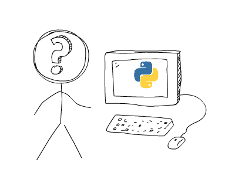
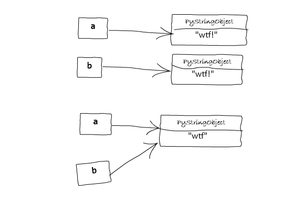
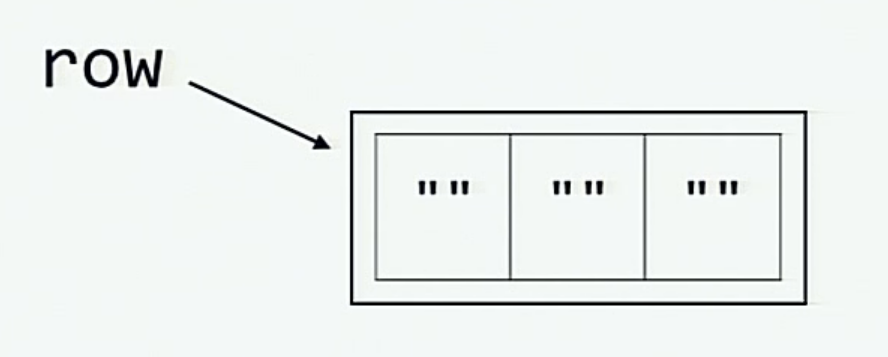
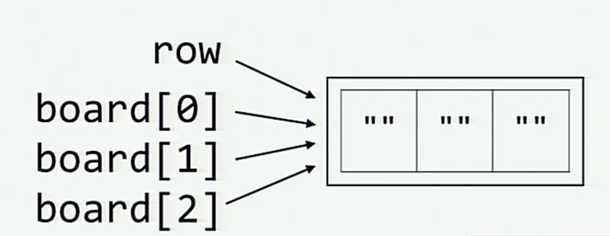

What the f*ck Python! 😱
Cùng khám phá và tìm hiểu Python thông qua các đoạn mã khiến bạn bất ngờ.
Các bản dịch tiếng nước ngoài khác: Tiếng Trung 中文 | Thêm bản dịch
Bạn có thể tham khảo các đoạn mã với: Chế độ trực quan | Giao diện dòng lệnh
Python là một ngôn ngữ cấp cao, với các mã được thông dịch thay vì biên dịch như các ngôn ngữ khác như C hay Java. Python có rất nhiều các tính năng giúp việc lập trình dễ dàng, thuận tiện. Tuy nhiên, các đoạn mã viết bằng Python thỉnh thoảng cho ra kết quả không rõ ràng, gây khó hiểu khi mới nhìn vào.
wtfpython được tạo ra với mong muốn giải thích chính xác cách hoạt động của các đoạn mã thoạt nhìn khó hiểu và các tính năng ít được biết tới trong Python.
Một vài ví dụ có thể không làm bạn quá ngạc nhiên, tuy vậy bạn sẽ khám phá được những điều hay ho về Python mà có thể bạn chưa từng biết tới. Học lập trình thông qua những ví dụ như vậy giúp bạn hiểu sâu hơn những thứ nằm bên trong của một ngôn ngữ lập trình, khi đó bạn sẽ thấy hứng thú hơn trong quá trình học.
Nếu độc giả là một lập trình viên có thâm niên, hãy thử thức mình với các đoạn mã sắp tới, cố gắng làm đúng mỗi thử thách ngay trong lần đầu tiên. Độc giả có thể đã thử quả một vài trong số các bài toán trước đó, đọc và làm các bài toán dưới đây có thể giúp bạn ôn lại chúng.
PS: Nếu bạn đã đọc bài này trước đó, bạn có thể muốn xem những thay đổi mới ở đây.
Nào ta bắt đầu ...
Những nội dung chính
- Cấu trúc của các ví dụ
- Cách sử dụng
- 👀 Các ví dụ
- Section: Strain your brain!
- ▶ First things first! *
- ▶ Strings can be tricky sometimes
- ▶ Be careful with chained operations
- ▶ How not to use
isoperator - ▶ Hash brownies
- ▶ Deep down, we're all the same.
- ▶ Disorder within order *
- ▶ Keep trying... *
- ▶ For what?
- ▶ Evaluation time discrepancy
- ▶
is not ...is notis (not ...) - ▶ A tic-tac-toe where X wins in the first attempt!
- ▶ The sticky output function
- ▶ The chicken-egg problem *
- ▶ Subclass relationships
- ▶ All-true-ation *
- ▶ The surprising comma
- ▶ Strings and the backslashes
- ▶ not knot!
- ▶ Half triple-quoted strings
- ▶ What's wrong with booleans?
- ▶ Class attributes and instance attributes
- ▶ Non-reflexive class method *
- ▶ yielding None
- ▶ Yielding from... return! *
- ▶ Nan-reflexivity *
- ▶ Mutating the immutable!
- ▶ The disappearing variable from outer scope
- ▶ The mysterious key type conversion
- ▶ Let's see if you can guess this?
- Section: Slippery Slopes
- ▶ Modifying a dictionary while iterating over it
- ▶ Stubborn
deloperation - ▶ The out of scope variable
- ▶ Deleting a list item while iterating
- ▶ Lossy zip of iterators *
- ▶ Loop variables leaking out!
- ▶ Beware of default mutable arguments!
- ▶ Catching the Exceptions
- ▶ Same operands, different story!
- ▶ Name resolution ignoring class scope
- ▶ Needles in a Haystack *
- ▶ Splitsies *
- ▶ Wild imports *
- ▶ All sorted? *
- ▶ Midnight time doesn't exist?
- Section: The Hidden treasures!
- Section: Appearances are deceptive!
- Section: Miscellaneous
- Contributing
- Acknowledgements
- 🎓 License
- Surprise your friends as well!
- More content like this?
Cấu trúc của các ví dụ
Tất cả các các ví dụ được trình bày với cấu trúc như sau:
▶ Một tiêu đề hấp dẫn
# Đoạn mã tạo dựng ví dụ. # Đoạn mã chủ thể cần khám phá...Kết quả (Các phiên bản Python):
(Có thể có hay không): Một dòng mô tả kết quả>>> câu lệnh kích hoạt? Một vài kết quả bất ngờ, không như mong đợi💡 Giải thích:
- Giải thích những điều đang diễn ra và tại sao.
Kết quả (Các phiên bản Python):# Đoạn mã tạo dựng ví dụ # Trong trường hợp cần thiết, chúng tôi liệt kê thêm nhiều ví dụ khác để giúp bạn hiểu rõ hơn>>> trigger # some example that makes it easy to unveil the magic >>> trigger # Một vài ví dụ giúp bạn hiểu các đoạn mã # some justified output
Lưu ý: Tất cả các ví dụ đã được chứng minh chạy thành công trên trình thông dịch Python 3.5.2 chế độ tương tác, với các phiên bản Python khác các ví dụ sẽ vẫn chạy bình thường, ngoại trừ một số ví dụ chúng tôi sẽ lưu ý trước phần kết quả.
Cách dùng các ví dụ
Theo tôi, để học các ví dụ trong bài, bạn nên đọc theo trình tự thời gian, và đối với mỗi ví dụ hãy: - Đọc kĩ đoạn mã tạo dựng nên ví dụ. Nếu bạn đã lập trình lâu rồi, bạn sẽ đoán được những điều sắp tới ngay. - Đọc kết quả của các ví dụ và thực hiện hai việc sau: + Kiểm tra xem kết quả có giống như bạn nghĩ hay không. + Một khi đọc xong, hãy hỏi chính bạn xem mình đã hiểu thông suốt lý do mà có kết quả như vậy chưa. - Nếu câu trả lời là "chưa, tôi chưa hiểu" (không sao cả), hít một hơi thật sau, và đọc phần giải thích (nếu bạn vẫn chưa hiểu, hãy tạo một issue ở dây). - Nếu câu trả lời là "có, tôi đã hiểu", bạn có thể đọc ví dụ tiếp theo. PS: Bạn có thể đọc WTFPython dùng chế độ dòng lệnh sử dụng pypi package,
$ pip install wtfpython -U
$ wtfpython
👀 Các ví dụ
Chương 1: Hack não!
▶ Món khai vị! *
Kí hiệu "con hà mã" ("Walrus" operator), được giới thiệu trong phiên bản Python 3.8 đã trở nên khá phổ biến vì một vài lý do. Hãy thử qua nó xem 1.
# Phiên bản Python 3.8+
>>> a = "wtf_walrus"
>>> a
'wtf_walrus'
>>> a := "wtf_walrus"
File "<stdin>", line 1
a := "wtf_walrus"
^
SyntaxError: invalid syntax (Lỗi về cú pháp: Cú pháp không hợp lệ)
>>> (a := "wtf_walrus") # This works though
>>> a
'wtf_walrus'
2 .
# Phiên bản Python 3.8+
>>> a = 6, 9
>>> a
(6, 9)
>>> (a := 6, 9)
>>> a
6
>>> a, b = 6, 9 # Phân rã (unpacking) các giá trị, hay còn gọi là câu lệnh gán đa giá trị (multiple assignments)
>>> a, b
(6, 9)
>>> (a, b = 16, 19) # Có
File "<stdin>", line 1
(a, b = 6, 9)
^
SyntaxError: invalid syntax (Lỗi cú pháp: cú pháp không hợp lệ)
>>> (a, b := 16, 19) # Câu lệnh này in ra một tuple có 3 phần tử không như mong đợi (đáng lẽ là 2 phần tử 16 và 19)
(6, 16, 19)
>>> a # a được được gán lại giá trị trước đó, nhưng giá trị phía dưới vẫn giữ nguyên, là sao?
6
>>> b
16
💡 Giải thích
Ôn lại một chút về kí hiệu "con hà mã"
Kí hiệu con hà mã (:=) lần đầu tiên được giới thiệu trong phiên bản Python 3.8, nó hữu dụng khi bạn muốn gán giá trị cho các biến bên trong một biểu diễn (expression).
def some_func():
# Giả định rằng ta thực hiện một vài phép tính tốn nhiều tài nguyên (thời gian, I/O) ở đây
# time.sleep(1000)
return 5
# Thay vì thực hiện việc kiểm tra kết quả trả về của hàm trên,
if some_func():
print(some_func()) # Và gọi lại hàm đó trong thân điều kiện, nghĩa là thực hiện các tính toán trong hàm 2 lần.
# Hay tốt hơn, ta có thể tiết kiệm một lời gọi hàm thông qua việc lấy về giá trị trả về ở một lần gọi và thực hiện so sánh trên giá trị đó:
a = some_func()
if a:
print(a)
# Dùng kĩ hiệu con hà mã bạn có thể viết ngắn gọn hơn như dưới đây, phép gán được sử dụng như mệnh đề điều kiện và ta có thể sử dụng biến được gán giá trị trong thân câu điều kiện if:
if a := some_func():
print(a)
Kết quả (> 3.8):
5
5
5
Sử dụng kí hiệu con hà mã giúp ta rút ngắn được đoạn mã đi một dòng và tránh được việc gọi some_func hai lần.
-
Ta chỉ được sử dụng phép gán có kí hiệu hà mã ở cấp độ cao nhất do đó lỗi cú pháp (
SyntaxError) trong câu lệnha := "wtf_walrus"xảy ra. Khi ta cho phép gán này vào hai dấu ngoặc đơn()thì sẽ không bị lỗi nữa. -
Thông thường, câu lệnh có dấu bằng
=sẽ không được phép đặt trong dấu ngoặc đơn. Do vậy câu lệnh(a, b = 6, 9)bị lỗi cú pháp. -
Cú pháp của kí hiệu gán con hà mã như sau:
NAME:= expr, ở đóNAMElà một tên biến hợp lệ, vàexprlà một biểu diễn hợp lệ. Do vậy, việc sử dụng các phép gộp (packing) hay phân rã trong trường hợp này sẽ không được hỗ trợ, nghãi là -
(a := 6, 9)tương đương với((a := 6), 9)và buổi diễn cuối cùng là(a, 9)(ở đó giá trị củaalà 6). Bạn có thể kiểm tra lại với các dòng lệnh dưới đây>>> (a := 6, 9) == ((a := 6), 9) True # Biểu diễn bên trái bằng bên phải do phép phân rã không được phép (như đã giải thích phía trên) >>> x = (a := 696, 9) >>> x (696, 9) >>> x[0] is a # Cả x[0] và a cùng trỏ về chung một địa chỉ trong bộ nhớ True -
Tương tự,
(a, b := 16, 19)tương đương với(a, (b := 16), 19)khi ta có 3 giá trị trong một tuple.
▶ Strings thỉnh thoảng có thể khá oái oăm
1.
>>> a = "some_string"
>>> id(a)
140420665652016
>>> id("some" + "_" + "string") # Để ý rằng cả hai giá trị id đều giống nhau (140420665652016).
140420665652016
2.
>>> a = "wtf"
>>> b = "wtf"
>>> a is b
True # a và b cùng trỏ tới một địa chỉ trong bộ nhớ
>>> a = "wtf!"
>>> b = "wtf!"
>>> a is b
False # a và b không cùng trỏ tới một địa chỉ trong bộ nhớ
3.
>>> a, b = "wtf!", "wtf!"
>>> a is b # Áp dụng cho tất cả các phiên bản Python, ngoại trừ các phiên bản 3.7.x
True # a và b cùng trỏ tới một địa chỉ trong bộ nhớ
>>> a = "wtf!"; b = "wtf!"
>>> a is b # Kết quả là True hoặc False tuỳ thuộc vào môi trường bên chạy đoạn mã (python shell / ipython / as a script)
False
# Tạo một file tên some_file.py, chứa ba dòng code dưới đây:
a = "wtf!"
b = "wtf!"
print(a is b)
# Khi file này được chạy kết quả in ra là True
4.
Kết quả (< Python3.7 )
>>> 'a' * 20 is 'aaaaaaaaaaaaaaaaaaaa'
True
>>> 'a' * 21 is 'aaaaaaaaaaaaaaaaaaaaa'
False
Có gì đó sai sai?
💡Giải thích:
- Những điều xảy ra trong các đoạn mã đầu tiên và thứ hai đến từ một tối ưu của CPython (được gọi là string interning), tối ưu này cố gắng sử dụng các đối tượng không thể thay đổi giá trị hiện tồn tại trong một vài trường hợp thay vì việc tạo ra một đối tượng mới mỗi lần.
- Sau khi được "interned," nhiều biến có thể tham chiếu tới cùng một đối tượng string trong bộ nhớ (do vậy mà tiết kiệm bộ nhớ).
- Trong các đoạn mã phía trên, các strings được interned một cách ngầm. Quyết định ki nào thì intern một cách ngầm là phụ thuộc vào mỗi triển khai Python. Có một vài luật có thể được sử dụng để đoán biết một string sẽ được intern hay không:
- Tất cả strings có độ dài bằng 0 và 1 được intern.
- Các strings được intern tại thời điểm biên dịch (
'wtf'sẽ được intern nhưng''.join(['w', 't', 'f'])sẽ không được intern). - Các strings không được tạo thành từ các mẫu tự ASCII, số, hoặc dấu gạch chân, sẽ không được intern. Điều đó giải thích tại sao
'wtf!'không được intern bởi vì kí tự!. Triển khai Cpython cho luật này có thể tìm thấy ở đây  - Khi
aandbđược cho nhận giá trị"wtf!"trên cùng một dòng, trình thông dịch Python sẽ tạo một đối tượng mới, sau đó tham chiếu tới biến thứ hai tại cùng một thời điểm. Nếu bạn làm các phép gán trên các dòng riêng biệt, trình thông dịch sẽ không biết rằng đã có"wtf!"tồn tại như một đối tượng (bởi vì"wtf!"không được intern ngầm như điều được trình bày trên). Đây là một tối ưu tại thời điểm biên dịch. Tối ưu này không áp dụng cho các phiên bản CPython 3.7.x (xem thêm về vấn đề này [ở đây] (https://github.com/satwikkansal/wtfpython/issues/100)). - Một đơn vị biên dịch trong môi trường tương tác như IPython bao gồm chỉ một câu lệnh đơn, trái lại
a = "wtf!"; b = "wtf!"là hai câu lệnh. Điều này giải thích tại sao các danh định (identities) lại khác nhau tronga = "wtf!"; b = "wtf!", và cũng giải thích tại sao chúng lại giống nhau trongsome_file.py. - Sự thay đổi đột ngột trong đoạn mã thứ tư là do một kĩ thuật Tối ưu peephole hay còn được biết đến như sự gấp hằng số. Điều này có nghĩa là biểu diễn
'a'*20được thay thế bở'aaaaaaaaaaaaaaaaaaaa'trong quá trình biên dịch tiết kiệm một vài chu kì đồng hồ trong suốt thời gian chạy . Sự gấp hằng số chỉ xảy ra đối với các strings có độ dài nhỏ hơn 20 (Tại sao? tưởng tượng kích thước của file.pycsinh ra bởi biểu diễn'a'*10**10). Link này dẫn tới triển khai của tối ưu được đề cập. - Chú ý rằng: trong Python 3.7, gấp hằng số được chuyển từ bộ tối ưu peephole sang bộ tối ưu mới AST với một vài thay đổi luận lý, nên đoạn mã thứ tư không chạy được trong Python 3.7. Bạn có thể đọc thêm về sự thay đổi này ở .
▶ Be careful with chained operations
>>> (False == False) in [False] # makes sense
False
>>> False == (False in [False]) # makes sense
False
>>> False == False in [False] # now what?
True
>>> True is False == False
False
>>> False is False is False
True
>>> 1 > 0 < 1
True
>>> (1 > 0) < 1
False
>>> 1 > (0 < 1)
False
💡 Giải thích:
As per https://docs.python.org/2/reference/expressions.html#not-in
Nếu a, b, c, ..., y, z là các biểu diễn (expressions) và op1, op2, ..., opN là các phép so sánh, khi đó op1 b op2 c ... y opN z tương đương với op1 b and b op2 c and ... y opN, ngoại trì việc mỗi biểu diễn được thực hiện hay đánh giá nhiều nhât một lần
Trong khi những điều ta thấy phía trên có thể hơi ngớ ngẩn đối với bạn, ta có thể làm những thứ thú vị hơn như a == b == c và 0 <= x <= 100.
False is False is Falsetương đương(False is False) and (False is False)True is False == Falsetương đương vớiTrue is False and False == Falsevà do phần so sánh đầu tiên (True is False) cho ra kết quảFalse, do đó kết quả cuối cùng làFalse.1 > 0 < 1tương đương với1 > 0 and 0 < 1và cho ra kết quả làTrue.- Biểu diễn
(1 > 0) < 1tương đương vớiTrue < 1vàdo đó,>>> int(True) 1 >>> True + 1 #làm cho vui thôi, chứ không liên quan 21 < 1cho ra kết quảFalse
▶ How not to use is operator
Ví dụ dươi đây rất nổi tiếng trên Internet 1.
>>> a = 256
>>> b = 256
>>> a is b
True
>>> a = 257
>>> b = 257
>>> a is b
False
2.
>>> a = []
>>> b = []
>>> a is b
False
>>> a = tuple()
>>> b = tuple()
>>> a is b
True
3. Kết quả
>>> a, b = 257, 257
>>> a is b
True
Kết qủa (Chỉ áp dụng cho Python 3.7.x )
>>> a, b = 257, 257
>> a is b
False
💡 Giải thích:
Sự khác biệt giữa is và ==
iskiểm tra xem cả hai phần tử so sánh có trỏ về cùng một đôi tượng (ví dụ,iskiểm tra định danh của cả hai thành phần được so sánh có khớp với nhau hay không)==so sánh giá trị của hai phần tử xem chúng có bằng nhau hay không- Vì thế
isđược dùng cho việc so sánh tham chiếu và==được dùng cho so sánh tham trị. Hãy xem ví dụ dưới đây để hiểu rõ hơn**>>> class A: pass >>> A() is A() # Hai đối tượng rỗng nhưng nằm ở hai vị trí khác nhau trong bộ nhớ. False256là một đối tượng hiện hữu nhưng257lại không phải là một đối tượng hiện hữu.
Khi bạn khởi chạy python các số từ -5 tới 256 sẽ được cấp phát. Những sô nay được sử dụng rất nhiều, do đó việc cấp phát này là hợp lý.
Tham khảo từ https://docs.python.org/3/c-api/long.html
Cách triển khai hiện hành của Python duy trì một mảng các đối tượng sô nguyên từ -5 tới 256, khi bạn tạo một số nguyên trong dải này bạn sẽ quay trở về lại một tham chiếu tới một đôi tượng tồn tại. Do vậy ta vẫn có thể thay đổi giá trị của 1.
>>> id(256)
10922528
>>> a = 256
>>> b = 256
>>> id(a)
10922528
>>> id(b)
10922528
>>> id(257)
140084850247312
>>> x = 257
>>> y = 257
>>> id(x)
140084850247440
>>> id(y)
140084850247344
Ở đây trình thông dịch không đủ thông minh khi thực thi y = 257 và nhận ra rằng chúng ta đã tạo một số nguyên có giá trị là 257, rồi, do đó nó tiếp tục tạo một đôi tượng khác trong bộ nhớ.
Một tối ưu tương tự áp dụng cho các đối tượng bất biến (immutable) khác như là các tuples. Bởi vì lists có thể biến đổi được, do đó ta hiểu tại sao [] is [] sẽ trả về False và () is () sẽ trả về True. Điều này giải thích đoạn mã thứ hai. Nào hãy cùng đi qua ví dụ thứ 3.
** Cả a và b đều trỏ về cùng một đối tượng khi được khởi tạo với cung một giá trị và trên cùng một dòng code
Kết quả**
>>> a, b = 257, 257
>>> id(a)
140640774013296
>>> id(b)
140640774013296
>>> a = 257
>>> b = 257
>>> id(a)
140640774013392
>>> id(b)
140640774013488
-
Trên cùng một dòng code nơi cả a va b được gán cho giá trị
257, trinh thông dịch Python tạo một đôi tượng mới, sau đó trỏ tới biến thứ hai cùng một lúc. Nếu bạn thực hiện việc gán trên các dòng riêng biệt, Python sẽ không biết rằng đã có săn một đối tượng257 -
Đây là một tối ưu của trình biên dịch, và áp dụng cụ thể cho môi trường tương tác (interactive environment). Khi bạn nhập hai dòng code trong phiên thôn dịch động, chúng được biên dịch riêng, do đó được tối ưu riêng. Nếu bạn thử ví dụ này trong một file
.pybạn sẽ không thấy điều trên xảy ra do file code được biên dịch một lần. Tối ưu nay không chỉ giơi hạn cho các số nguyên, nó còn hoạt động được với các kiểu dữ liệu bất biến khác như strings (xem "Strings are tricky example") và floats.>>> a, b = 257.0, 257.0 >>> a is b True
* Tại sao ví dụ nay lại không chạy được trên Python 3.7? Đại khái lý do là bởi vì các tối ưu của trình biên dịch áp dụng cho các trường hợp cụ thể (ví dụ. một cách tối ưu có thể thay đổi tuỳ theo phiên bản, hệ điều hành, vân vân). Tôi vân đang tìm hiểu các thay đổi cụ thể trong code triểu khai, bạn có thể xem thêm tại đây
▶ Hash brownies
1.
some_dict = {}
some_dict[5.5] = "JavaScript"
some_dict[5.0] = "Ruby"
some_dict[5] = "Python"
Kết quả:
>>> some_dict[5.5]
"JavaScript"
>>> some_dict[5.0] # "Python" chiếm lấy khoá (key) của "Ruby"?
"Python"
>>> some_dict[5]
"Python"
>>> complex_five = 5 + 0j
>>> type(complex_five)
complex
>>> some_dict[complex_five]
"Python"
Thế quái nào mà toàn in ra Python?
💡 Giải thích
- Tính duy nhất của các khoá (keys) trong cấu trúc dữ liệu từ điển của được xác định bởi sự tương đương, chứ không phải dựa trên danh tính. Do đó dẫu cho
5,5.0, và5 + 0jlà các đối tượng riêng biệt có kiểu khác nhau, nhưng bởi vì chúng băng nhau nên không thể tồn tại như một khoá riêng củadict(hoặcset). Khi bạn thêm các khoá này vào từ điển sau đó tra giá trị của khoá đó dựa trên giả định về sự tương đương thì Python chỉ trả về giá trị của khoá được chèn vào ban đầu (thay vì trả lại lỗi về truy xuất khoáKeyError):>>> 5 == 5.0 == 5 + 0j True >>> 5 is not 5.0 is not 5 + 0j True >>> some_dict = {} >>> some_dict[5.0] = "Ruby" >>> 5.0 in some_dict True >>> (5 in some_dict) and (5 + 0j in some_dict) True -
Nguyên lý trên cũng áp dụng khi bạn gán giá trị cho khoá. Khi bạn thực hiện phép gán
some_dict[5] = "Python", Python tìm phần tử có sẵn trong từ điển có khoá tương đương, trong trường hợp này nè5.0 -> "Ruby", ghi đè lên giá trị của khoá này ngay, và lờ đi khoá tương đương mà bạn mới cung cấp.>>> some_dict {5.0: 'Ruby'} >>> some_dict[5] = "Python" >>> some_dict {5.0: 'Python'} -
Vậy làm sao để cập nhật khoá
5vào từ điển (thay vì5.0)? Thực sự là chúng ta không thể làm điều đó vơi một thao tác, nhưng ta có thể xoá đi khoá cũ (del some_dict[5.0]), và sau đó thiết lập khoá mới(some_dict[5]) để có thể lấy được khoá5thay vì5.0, tuy nhiên cách này ít ai xài tới lắm. -
Làm thế nào Python tìm khoá
5trong từ điển có chứa sẵn khoá5.0? Nó làm được điều đó mà không phải dò qua mọi phần tử trong từ điển thông qua sử dụng các hàm băm (hash functions), do đó tốn thời gian chạy hằng số (constant time). Khi Python tra khoá tênfootrong một tư điển, đầu tiên nó thực hiện hàm bămhash(foo)(với thời gian chạy hằng số). Bởi vì trong Python các đối tượng băng nhau khi chúng có chung một giá trị băm (đọc thêm ở đây here),5,5.0, and5 + 0jhave the same hash value.Ghi chú: Các đối tượng có giá trị băm băng nhau chưa chắc đã bằng nhau. (Vẫn đề này được biết tới với tên gọi hash collision, và giảm đi hiệu năng với thời gian hằng số qua việc dùng hàm băm.)>>> 5 == 5.0 == 5 + 0j True >>> hash(5) == hash(5.0) == hash(5 + 0j) True
▶ Deep down, we're all the same.
class WTF:
pass
Kết quả:
>>> WTF() == WTF() # two different instances can't be equal
False
>>> WTF() is WTF() # identities are also different
False
>>> hash(WTF()) == hash(WTF()) # hashes _should_ be different as well
True
>>> id(WTF()) == id(WTF())
True
💡 Giải thích:
- Khi
idđược gọi, Python tạo một đối tượng lớpWTFvà truyền đối tượng này cho hàmid. Hàmidlấyidcủa đối tượng (vùng nhớ của đối tượng), và vứt đối tượng này đi. Do đó đối tượng bị tiêu huỷ. - Khi chúng ta gọi
idhai lần, Python cấp phát cùng một vùng nhơ cho đối tượng thư hai. Bởi vi (trong CPython)idsử dụng vùng nhớ cho id của đối tượng, id của hai đối tượng này là giống nhau. - Vì vậy, id của đối tượng chỉ duy nhất trong vòng đời của đối tượng đó. Sau khi đối tượng bị tiêu hiểu, hay trước khi nó được tạo, những thứ khác có thể có cùng id với nó.
- Nhưng tại sao phép
islại cho ra kết quảFalse? Hãy nhìn ví dụ dưới đâyclass WTF(object): def __init__(self): print("I") def __del__(self): print("D") ``` **Kết quả:** ```py >>> WTF() is WTF() I I D D False >>> id(WTF()) == id(WTF()) I D I D True ``` Như bạn quan sát thấy, có sự khác biệt ở thứ tự tiêu hiểu các đối tượng, và đó tạo ra sự khác biệt. --- ### ▶ Vô trật tự trong trật tự * <!-- Example ID: 91bff1f8-541d-455a-9de4-6cd8ff00ea66 ---> ```py from collections import OrderedDict dictionary[1] = 'a'; dictionary[2] = 'b'; ordered_dict = OrderedDict() ordered_dict[1] = 'a'; ordered_dict[2] = 'b'; another_ordered_dict = OrderedDict() another_ordered_dict[2] = 'b'; another_ordered_dict[1] = 'a'; class DictWithHash(dict): """ A dict that also implements __hash__ magic. """ __hash__ = lambda self: 0 class OrderedDictWithHash(OrderedDict): """ An OrderedDict that also implements __hash__ magic. """ __hash__ = lambda self: 0
Kết quả
>>> dictionary == ordered_dict # Nếu a == b
True
>>> dictionary == another_ordered_dict # and b == c
True
>>> ordered_dict == another_ordered_dict # thế sao c != a ??
False
# ta biết răng set chỉ chứa các phần tử độc nhất,
# thử tạo một set chứa 3 từ điển phía trên xem sao...
>>> len({dictionary, ordered_dict, another_ordered_dict})
Traceback (most recent call last):
File "<stdin>", line 1, in <module>
TypeError: unhashable type: 'dict' (Lỗi về kiểu: kiểu không thể hash được)
# Lỗi trên xảy ra là điều dê hiểu do từ điển không được tran bị __hash__,
# sử dụng các lớp bọc (wrapper classes) ta xây dựng phía trên thử xem.
>>> dictionary = DictWithHash()
>>> dictionary[1] = 'a'; dictionary[2] = 'b';
>>> ordered_dict = OrderedDictWithHash()
>>> ordered_dict[1] = 'a'; ordered_dict[2] = 'b';
>>> another_ordered_dict = OrderedDictWithHash()
>>> another_ordered_dict[2] = 'b'; another_ordered_dict[1] = 'a';
>>> len({dictionary, ordered_dict, another_ordered_dict})
1
>>> len({ordered_dict, another_ordered_dict, dictionary}) # xáo trộn thứ tự cá phần tử trong set
2
Cái quái gì đang xảy ra?
💡 Giải thích:
-
Lý do tại sao quy tắc so sánh bắc cầu không áp dụng được khi so sánh
dictionary,ordered_dictvàanother_ordered_dictlà do cách triển khai phương thức__eq__trong lớpOrderedDict. Xem thêm tài liệuCác phép so sánh bằng giữa các đối tượng OrderedDict tuôn theo thư tự và được thực hiện như sau. Còn phép so sánh băng giữa cá đối tượng
OrderedDictvà các đối tượng ánh xạ khác (mapping objects) thì không tuân theo thứ tự như là các từ điển thông thường.. -
Lý do ở đây là các đối tượng
OrderedDictđược cho phép bị thay thế trực tiếp tại bất cứ vị trí nao một từ điển thông thường được sử dụng. -
Vậy tại sao thay đổi thư tự của các từ điển lại ảnh hưởng tới đối tượng
setđược sinh ra? Câu trả lời là do thiếu sự so sánh nội đối tượng (intrasitive) . Do sets là các tập hợp không có thứ tự của các phần tử độc nhất, thứ tự các phần tử khi chèn vào không có nghĩa lý gì cả. Nhưng trong trường hợp này, nó lại có vấn đề. Hãy tìm hiểu thêm xem saoSự bất nhất ở đây>>> some_set = set() >>> some_set.add(dictionary) # these are the mapping objects from the snippets above >>> ordered_dict in some_set True >>> some_set.add(ordered_dict) >>> len(some_set) 1 >>> another_ordered_dict in some_set True >>> some_set.add(another_ordered_dict) >>> len(some_set) 1 >>> another_set = set() >>> another_set.add(ordered_dict) >>> another_ordered_dict in another_set False >>> another_set.add(another_ordered_dict) >>> len(another_set) 2 >>> dictionary in another_set True >>> another_set.add(another_ordered_dict) >>> len(another_set) 2another_ordered_dict in another_setcho kết quả làFalsebởi vìordered_dictđã tồn tại tronganother_settrước đó,ordered_dict == another_ordered_dicttrở thànhFalse.
▶ Cố thêm chút nữa... *
def some_func():
try:
return 'from_try'
finally:
return 'from_finally'
def another_func():
for _ in range(3):
try:
continue
finally:
print("Finally!")
def one_more_func(): # A gotcha!
try:
for i in range(3):
try:
1 / i
except ZeroDivisionError:
# Let's throw it here and handle it outside for loop
raise ZeroDivisionError("A trivial divide by zero error")
finally:
print("Iteration", i)
break
except ZeroDivisionError as e:
print("Zero division error occurred", e)
Kết quả:
>>> some_func()
'from_finally'
>>> another_func()
Finally!
Finally!
Finally!
>>> 1 / 0
Traceback (most recent call last):
File "<stdin>", line 1, in <module>
ZeroDivisionError: division by zero (Ngoại lệ sinh ra bởi chia một số cho số 0)
>>> one_more_func()
Iteration 0
💡 Giải thích:
- Khi câu lệnh
return,breakhaycontinueđược thực hiện trong phầntrycủa khối "try…finally", phầnfinallycũng được thực hiện. - Giá trị trả về của một hàm được xác định bởi câu lệnh
returncuối cung được thực hiện. Bởi vì phầnfinallyluôn được thực hiện, câu lệnhreturntrong phầnfinallysẽ luôn là câu lệnh trả về gia trị cuối cùng. - Tuy nhiên nếu phần finally thực hiện câu lệnh
returnhaybreakthì phần ngoại lệ tồn tại sẽ bị bỏ qua.
▶ For what?
some_string = "wtf"
some_dict = {}
for i, some_dict[i] in enumerate(some_string):
i = 10
Kết quả:
>>> some_dict # An indexed dict appears.
{0: 'w', 1: 't', 2: 'f'}
💡 Giải thích:
- Câu lệnh
forđược định nghĩa trong ngữ pháp Python như sau:for_stmt: 'for' exprlist 'in' testlist ':' suite ['else' ':' suite]
Ở đó exprlist là biến mục tiêu của phép gán. Điều đó co nghĩa là câu lệnh gán {exprlist} = {next_value} được thực hiện đối với mỗi phần tử trong đối tượng lặp (iterable)
An interesting example that illustrates this:
for i in range(4):
print(i)
i = 10
Kết quả:
0
1
2
3
Bạn có nghĩ răng vòng lặp trên chỉ chạy có một lần?
💡 Giải thích:
-
Câu lệnh gán
i = 10không bao giờ ảnh hưởng tới các vòng lặp do cách thức hoạt động của vòng lặp for tron Python. Trước điểm khởi đầu của mỗi vòng lặp, phần tử tiếp theo được đưa ra bởi trình sinh (iterator, trong trường hợp nay làrange(4)), phần tử này được giải nén ra (unpacked) và gán cho các biến chạy (trong trường hợp nay lài) -
Hàm
enumerate(some_string)sinh ra giá trị mớii(biến đếm) và một kí tự từsome_stringtại mỗi lần lặp. Sau đó nó gán khoáicủa từ điểnsome_dictcho kí tự đó. Trình tự được thể hiện đơn giản như dưới đây:>>> i, some_dict[i] = (0, 'w') >>> i, some_dict[i] = (1, 't') >>> i, some_dict[i] = (2, 'f') >>> some_dict
▶ Sự khác biệt đến từ thời điểm đánh giá
1.
array = [1, 8, 15]
# Một biểu diễn generator thông thường
gen = (x for x in array if array.count(x) > 0)
array = [2, 8, 22]
Kết quả:
>>> print(list(gen)) # Các giá trị khác đi đâu mất rồi?
[8]
2.
array_1 = [1,2,3,4]
gen_1 = (x for x in array_1)
array_1 = [1,2,3,4,5]
array_2 = [1,2,3,4]
gen_2 = (x for x in array_2)
array_2[:] = [1,2,3,4,5]
Kết quả:
>>> print(list(gen_1))
[1, 2, 3, 4]
>>> print(list(gen_2))
[1, 2, 3, 4, 5]
3.
array_3 = [1, 2, 3]
array_4 = [10, 20, 30]
gen = (i + j for i in array_3 for j in array_4)
array_3 = [4, 5, 6]
array_4 = [400, 500, 600]
Kết quả:
>>> print(list(gen))
[401, 501, 601, 402, 502, 602, 403, 503, 603]
💡 Lý giải
- Trong một biểu diễn generator, câu
inđược thực hiện tại thời điểm khai báo, nhưng câu điều kiện được thực hiện tại thời điểm chạy (runtime). - Do trước thời điểm chạy,
arrayđược gán cho giá trị[2, 8, 22], và trong ba số được gán trước đó1,8and15, chỉ có8có số lần xuất hiện trong mảng mới và do đó số lần xuât hiện lớn hơn0, nên generator chỉ cho ra số8. - Sự khác biệt giữa kết quả của
g1andg2trong phần thứ hai là do cách các biếnarray_1vàarray_2được gán lại các giá trị. - Trong trường hợp đầu tiên,
array_1được gán cho một đối tượng mới[1,2,3,4,5]và vì câuinđược thực hiện tại thời điểm khai báo nên nó vẫn trỏ tới đối tượng cũ[1,2,3,4](đối tượng này chưa bị mất đi). - Trong trường hợp thư hai, phép gán lát cắt (slice assignment)
array_2cập nhật đối tượng cũ[1,2,3,4]thành[1,2,3,4,5]. Hiển nhiên cảg2vàarray_2đều trỏ tới cung một đối tượng (đối tượng đã được cập nhật thành[1,2,3,4,5]). - Okay, với những gì ta quan sát trên, co phải giá trị trả về từ
list(g)trong phần thứ ba phải là[11, 21, 31, 12, 22, 32, 13, 23, 33]? (bởi vìarray_3vàarray_4sẽ giống nhưarray_1). Lý do chỉarray_4được cập nhật được giải thích ở đây PEP-289 >Chỉ có vòng for ngoài cùng được thực hiện ngay lập tức, các lệnh khác được trì hoãn cho đến khi generator được chạy.
▶ is not ... không phải là is (not ...)
>>> 'something' is not None
True
>>> 'something' is (not None)
False
💡 Giải thích
is notlà một toán tử nhị phân đơn, và khi thực hiện sẽ cho kết quả khác với sử dụngisvànotriêng biệt.is notcho ra kết quảFalsekhi các biến ở hai đầu của nó trỏ về cùng một đối tượng , và nếu hai biến này trỏ về khác đối tượng, kết quả sẽ làTrue. Cụ thể,Nonevàsomethingtrỏ về hai biến khác nhau nên kết quả làTrue- Trong ví dụ trên,
(not None)sẽ cho ra kết quảTruebởi vì khi sử dụng trong phép so sánh luận lýNonetương đương vớiFalse, do đó dòng mã trên sẽ trở thành'something' is True. Cụ thể, dosomethingvàTruetrỏ về hai đối tượng khác nhau nên kết quả làFalse
▶ A tic-tac-toe where X wins in the first attempt!
# Khởi tạo một hàng
row = [""] * 3 #row i['', '', '']
# Và tạo một bảng gồm các hàng
board = [row] * 3
Kết quả:
>>> board
[['', '', ''], ['', '', ''], ['', '', '']]
>>> board[0]
['', '', '']
>>> board[0][0]
''
>>> board[0][0] = "X"
>>> board
[['X', '', ''], ['X', '', ''], ['X', '', '']]
Chúng ta đã gán "X" cho ba vị trí trong bảng này chăng?
💡 Giải thích:
Khi chúng ta khởi tạoi biến row, hình mô phỏng dưới đây cho ta biết những gì diễn ra trong bộ nhớ

Khi board được khởi tạo băng việc nhân bản row, minh hoạ phía dưới mô tả những gì diên ra trong bộ nhớ (mỗi thành phần của bảng board[0], board[1] và board[2] là một tham chiếu tới cung một danh sách trỏ bởi row)

Chúng ta có thể tránh điều trên xảy ra bằng cách không dùng biến row để sinh ra board. (Tim hiểu thêm tại (https://github.com/satwikkansal/wtfpython/issues/68) )
>>> board = [['']*3 for _ in range(3)]
>>> board[0][0] = "X"
>>> board
[['X', '', ''], ['', '', ''], ['', '', '']]
▶ The sticky output function
1.
funcs = []
results = []
for x in range(7):
def some_func():
return x
funcs.append(some_func)
results.append(some_func()) # Chú ý lời gọi hàm ở đây
funcs_results = [func() for func in funcs]
kết quả:
>>> results
[0, 1, 2, 3, 4, 5, 6]
>>> funcs_results
[6, 6, 6, 6, 6, 6, 6]
x khác nhau trong mọi vòng lặp trước khi đặt some_func vào trong danh sách funcs, tất cả các hàm đều trả về 6.
2.
>>> powers_of_x = [lambda x: x**i for i in range(10)]
>>> [f(2) for f in powers_of_x]
[512, 512, 512, 512, 512, 512, 512, 512, 512, 512]
💡 Lý giải
-
Khi định nghia một hàm bên trong một vòng lặp, vòng lặp có biến lặp được sử dụng trong thân hàm, closure của hàm này được giơi hạn cho biến, chư không phải là giá trị. Vì vậy tất cả các ham sử dụng giá trị cuối cung được gán cho biến này để thực hiện tính toán. Để rõ hơn ta thấy được rằng biến lặp
x(và giá trị của cung của nó nhận được là6) trong ví dụ thứ nhất được sử dụng cho tất cả các hàmfunc(), hàm này sẽ luôn trả về giá trị là6 -
Để thực hiện được tính toán mong muốn bạn có thể truyền biến lặp như là biến được đặt tên (named variable) cho hàm. Sao mà nó lại chạy đúng được? ởi vì việc truyền biến như vậy sẽ định nghĩa lại biến nay bên trong phạm vi của hàm.
funcs = [] for x in range(7): def some_func(x=x): return x funcs.append(some_func)Kết quả:
>>> funcs_results = [func() for func in funcs] >>> funcs_results [0, 1, 2, 3, 4, 5, 6]
▶ Bài toán con gà và quả trứng *
1.
>>> isinstance(3, int)
True
>>> isinstance(type, object)
True
>>> isinstance(object, type)
True
Đâu là lớp cơ bản cuối cùng ? Còn nhiều thứ gây khó hiểu hơn nữa sau đây
2.
>>> class A: pass
>>> isinstance(A, A)
False
>>> isinstance(type, type)
True
>>> isinstance(object, object)
True
3.
>>> issubclass(int, object)
True
>>> issubclass(type, object)
True
>>> issubclass(object, type)
False
💡 Giải thích
typelà một metaclass trong Python.- Mọi thứ đều là một đối tượng
objecttrong Python, bao gồm cả các lớp (classes) cũng như là các hiện thực của chúng (instances). - Lớp
typelà metaclass của lớpobject, do đó mọi lớp (gồm cảtype) thừa hưởng trực tiếp hay gián tiếp từobject. - Không có một lớp nào nằm giữa lớp
objectvàtype. Vấn đề đối với các đoạn mã phía trên nằm ở cách ta tìm các mối quan hệ giữa các lớp trong Python (dùngissubclassvàisinstance). Mỗi quan hệ giữaobjectvàtypekhông thể được định nghĩa trong Python đơn thuần. Chính xác hơn, nghĩa là,- Lớp A là một hiện thực của lớp B, và lớp B là một hiện thực của lớp A.
- Lớp A là một hiện thực của chính nó.
- Các mối quan hệ giữa
objectvàtype(ở cả hai cấp độ hiện thực cũng như chính lớp đó) tồn tại là do việc "ăn gian" khi triển khai các lớp này.
▶ Các mối quan hệ của lơp con (subclass)
Kết quả:
>>> from collections import Hashable
>>> issubclass(list, object)
True
>>> issubclass(object, Hashable)
True
>>> issubclass(list, Hashable)
False
Mối quan hệ giữa các lớp con có tính bắc cầu không?(ví dụ, nếu A là lớp con của B, và B là lớp con của C, vậy A nên là lớp con của C)
💡 Lý giải:
- Trong Python mối quan hệ giữa cá lớp con không nhất thiết phải mang tính bắc cầu. Bất cứ ai cũng được phép định nghĩa một lớp
__subclasscheck__riêng, tuỳ ý trong một siêu lớp (metaclass). - Khi
issubclass(cls, Hashable)được gọi, nó chỉ tìm phương thức non-Falsey "__hash__" trongclshoặc bất cư thư gì nó thừa hưởng từ đó. - Bởi vì
objectlà một đối tượng có thể băm (hashable), cònlistthi không, nên nó phá vỡ tính bắc cầu. - Giải thích chi tiết có thể xem ở đây.
▶ All-true-ation *
>>> all([True, True, True])
True
>>> all([True, True, False])
False
>>> all([])
True
>>> all([[]])
False
>>> all([[[]]])
True
Lý do vì sao mà lúc thì True mà lúc thì lại False
💡 Giải thích:
-
Hàm
alltương đương như đoạn mã dưới -
py def all(iterable): for element in iterable: if not element: return False return True -
all([])trả vềTruebởi vì danh sách nay rỗng. all([[]])trả vềFalsebởi vìnot []làTruetương đương vớinot Falsebởi vì danh sách phía trong rỗng.all([[[]]])và các biến thể đệ quy cao hơn luôn trả vềTruebởi vìnot [[]],not [[[]]], tương đương vớinot True.
▶ Dấu phẩy lạ lùng
Kết quả (< 3.6):
>>> def f(x, y,):
... print(x, y)
...
>>> def g(x=4, y=5,):
... print(x, y)
...
>>> def h(x, **kwargs,):
File "<stdin>", line 1
def h(x, **kwargs,):
^
SyntaxError: invalid syntax (Lỗi cú pháp không hợp lệ)
>>> def h(*args,):
File "<stdin>", line 1
def h(*args,):
^
SyntaxError: invalid syntax (Lỗi cú pháp không hợp lệ)
💡 Lý giải:
- Dấu phẩy nằm ở cuối danh sách các tham số của một hàm không phải bao giờ cũng hợp lệ.
- Trong Python, danh sách tham số được định nghĩa bởi một phần các dấu phẩy nằm phía trước và một phần các dấy phẩy nằm phía sau. Điều nay mâu thuẫn với các tình huống ở đó một dấu phẩy bị mắc kẹt ở giữa danh sách, và chẳng có một luật nào chấp nhận điều này cả.
- Chú ý: Vấn đề về dâu phẩy ở cuối đã được sửa trong Python 3.6. Thảo luận ở đây cung cấp những cách dung khác nhau của dây phẩy ở cuối.
▶ Strings and the backslashes
Kết quả:
>>> print("\"")
"
>>> print(r"\"")
\"
>>> print(r"\")
File "<stdin>", line 1
print(r"\")
^
SyntaxError: EOL while scanning string literal
>>> r'\'' == "\\'"
True
💡 Giải thích
- Trong một string thông thường, dấu xuyệc ngược được dùng để "escape" các kí tự có một ý nghĩa đặc biệt (như là dấu trích dẫn đơn, dấu trích dẫn kép, va chính dấu xuyệc ngược).
>>> "wt\"f" 'wt"f' - Đối với một string thô (raw string) (được chỉ định bởi tiếp đầu ngữ
r), dấu xuyệc ngược.>>> r'wt\"f' == 'wt\\"f' True >>> print(repr(r'wt\"f') 'wt\\"f' >>> print("\n") >>> print(r"\\n") '\\\\n' - Có nghĩa là khi một trình phân tích cú pháp gặp một dấu xuyệc ngược tron một string thô, trình này mong đợi một kí tự khác phía sau nó. Và tron trường hợp của chúng ta
print(r"\"), dấu xuyệc ngược vô hiệu hoá (escape) dấu trích dẫn ở đuôi, để lại cho trình thông dịch xử lý mà không có dấu trích dẫn kết thúc (do đó gây ra lỗi về cú phápSyntaxError). Đó là lý do tại sao các dấu xuyệc ngược không chạy được khi ở cuối một string thô.
▶ not knot!
x = True
y = False
Kết quả:
>>> not x == y
True
>>> x == not y
File "<input>", line 1
x == not y
^
SyntaxError: invalid syntax (Lỗi về cú pháp)
💡 Giải thích:
- Thứ tự ưu tiên của các phép toán ảnh hưởng tơi cách một câu lệnh được thực thi, và phép
==có độ ưu tiên cao hơn phépnottrong Python. - Vì vậy
not x == ytương đương vớinot (x == y)rồi tương đương vớinot (True == False)và kết quả làTrue. - Nhưng
x == not ygây ra lỗi cú phápSyntaxErrorbởi vì Python nghĩ rằng nó sẽ thực hiện(x == not) ychứ không phải làx == (not y)do đó bạn mới gặp lỗi về cú pháp. - Trình phân tích cú pháp mong đợi
notlà một phần của phép toánnot in(bởi vì cả==vànot incó cùng độ ưu tiên), nhưng do trong trương hợp của chúng ta, trình xử lý không tìm thấyinđằng saunot, nên nó gây raSyntaxError.
▶ Các chuỗi rưỡi trích dẫn
Kết quả:
>>> print('wtfpython''')
wtfpython
>>> print("wtfpython""")
wtfpython
>>> # Các câu lệnh phía dưới gặp lỗi cú pháp `SyntaxError` khi thực thi
>>> # print('''wtfpython')
>>> # print("""wtfpython")
File "<input>", line 3
print("""wtfpython")
^
SyntaxError: EOF while scanning triple-quoted string literal (Lỗi cú pháp khi sử lý chuỗi được bao bởi dấu trích dẫn)
💡 Giải thích:
- Python hỗ trợ ngầm ghép chuỗi, ví dụ,
>>> print("wtf" "python") wtfpython >>> print("wtf" "") # or "wtf""" wtf
+ ''' và """ là các kí hiệu phân cách chuỗi trong Python, chúng tạo ra lỗi SyntaxError bởi vì trình thông dịch Python chơ đợi kí hiệu phân cách kết thúc khi nó dò tìm chuỗi kí tự trích dẫn có ba dấu nháy .
▶ Có gì sai sai với các giá trị luận lý (booleans)?
1.
# Một ví dụ tính toán số lượng các giá trị luận lý và
# sô nguyên trong một danh sách lẫn lộn các kiểu phần tử khác nhau.
mixed_list = [False, 1.0, "some_string", 3, True, [], False]
integers_found_so_far = 0
booleans_found_so_far = 0
for item in mixed_list:
if isinstance(item, int):
integers_found_so_far += 1
elif isinstance(item, bool):
booleans_found_so_far += 1
Kết quả:
>>> integers_found_so_far
4
>>> booleans_found_so_far
0
2.
>>> some_bool = True
>>> "wtf" * some_bool
'wtf'
>>> some_bool = False
>>> "wtf" * some_bool
''
3.
def tell_truth():
True = False
if True == False:
print("I have lost faith in truth!")
Kết quả (< 3.x):
>>> tell_truth()
I have lost faith in truth!
💡 Lý giải:
-
boollà lơp con củainttrong Python>>> issubclass(bool, int) True >>> issubclass(int, bool) False -
Và do vậy,
TruevàFalselà các hiện thực (instances) củaint>>> isinstance(True, int) True >>> isinstance(False, int) True -
Giá trị dạng số nguyên của
Truelà1và củaFalselà0.>>> int(True) 1 >>> int(False) 0 -
Xem trên [câu trả lời] trên StackOverflow(https://stackoverflow.com/a/8169049/4354153) để biết lý do.
-
Lúc đầu, Python không có kiểu
bool(người ta dung 0 cho false và các giá trị khác không như 1 cho true).True,False, va kiểuboolđược bổ sung trong cá phiên bản 2.x, nhưng vi lý do hỗ trợ tương thích ngược (backward compatibility),TruevàFalsekhông thể trơ thành các hăng số (constants). Chúng chỉ là các biến được tích hợp sẵn trong Python, và ta có thể gán lại giá trị cho chúng.
* Python 3 không hỗ trợ tương thích ngược, và do vậy các đoạn mã cuối cung không chạy được trên Python 3.x!
▶ Class attributes and instance attributes
1.
class A:
x = 1
class B(A):
pass
class C(A):
pass
Kết quả:
>>> A.x, B.x, C.x
(1, 1, 1)
>>> B.x = 2
>>> A.x, B.x, C.x
(1, 2, 1)
>>> A.x = 3
>>> A.x, B.x, C.x # C.x thay đổi, nhưng B.x không thay đổi
(3, 2, 3)
>>> a = A()
>>> a.x, A.x
(3, 3)
>>> a.x += 1
>>> a.x, A.x
(4, 3)
2.
class SomeClass:
some_var = 15
some_list = [5]
another_list = [5]
def __init__(self, x):
self.some_var = x + 1
self.some_list = self.some_list + [x]
self.another_list += [x]
Kết quả:
>>> some_obj = SomeClass(420)
>>> some_obj.some_list
[5, 420]
>>> some_obj.another_list
[5, 420]
>>> another_obj = SomeClass(111)
>>> another_obj.some_list
[5, 111]
>>> another_obj.another_list
[5, 420, 111]
>>> another_obj.another_list is SomeClass.another_list
True
>>> another_obj.another_list is some_obj.another_list
True
💡 Giải thích:
- Các biến thuộc về lớp và các biến thuộc về các hiện thực của lơp (class instances) được xử lý nội tại như là các từ điển của một đối tượng lớp. Nếu một biến không nằm trong từ điển của lớp hiện hành, nó sẽ được tìm trong các lớp cha.
- Phép
+=thay đổi đối tượng có thể biến đổi (mutable) tại chỗ mà khôn cần phải tạo một đối tượng mới. Vì vậy thay đổi thuộc tính cua một hiện thực ảnh hưởng tới thuộc tính của các hiện thực khác và thuộc tính lớp.
▶ Non-reflexive class method *
class SomeClass:
def instance_method(self):
pass
@classmethod
def class_method(cls):
pass
Kết quả:
>>> SomeClass.instance_method is SomeClass.instance_method
True
>>> SomeClass.class_method is SomeClass.class_method
False
>>> id(SomeClass.class_method) == id(SomeClass.class_method)
True
💡 Giải thích:
- Lý do là vì
SomeClass.class_method is SomeClass.class_methodtrả vềFalselà bởi vì decorator@classmethod.
>>> SomeClass.instance_method
<function __main__.SomeClass.instance_method(self)>
>>> SomeClass.class_method
<bound method SomeClass.class_method of <class '__main__.SomeClass'>
Mỗi lần truy cập tới SomeClass.class_method là lại có một phương thức được bọc mới sinh ra (new bound method)
- id(SomeClass.class_method) == id(SomeClass.class_method) trả về True bởi vì quá trình cấp phát bộ nhớ cho class_method lần thứ hai xảy ra tại cung một ví trí với quá trình giải phóng bộ nhớ đầu tiên (Xem lại "Deep Down, we're all the same example" để có lời giải thích rõ hơn).
▶ yielding None
some_iterable = ('a', 'b')
def some_func(val):
return "something"
Kết quả (<= 3.7.x):
>>> [x for x in some_iterable]
['a', 'b']
>>> [(yield x) for x in some_iterable]
<generator object <listcomp> at 0x7f70b0a4ad58>
>>> list([(yield x) for x in some_iterable])
['a', 'b']
>>> list((yield x) for x in some_iterable)
['a', None, 'b', None]
>>> list(some_func((yield x)) for x in some_iterable)
['a', 'something', 'b', 'something']
💡 Giải thích:
- Đây là một bug tồn tại khi CPython xử lý
yieldtrong các generators và comprehensions. - Bạn có thể tham khảo thêm về lỗi này tại đây: https://stackoverflow.com/questions/32139885/yield-in-list-comprehensions-and-generator-expressions
- Báo cáo về bug này: http://bugs.python.org/issue10544
- Theo Python 3.8+
yieldkhông được phép nằm bên trong list comprehension và nếu bạn làm như vậy sẽ tạo ra lỗi cú phápSyntaxError.
▶ Yielding from... return! *
1.
def some_func(x):
if x == 3:
return ["wtf"]
else:
yield from range(x)
Kết quả (> 3.3):
>>> list(some_func(3))
[]
Đáng lẽ phải hiển thị "wtf" chứ nhỉ? Có phải là do yield from? Cùng tìm hiểu thêm nào,
2.
def some_func(x):
if x == 3:
return ["wtf"]
else:
for i in range(x):
yield i
Kết quả:
>>> list(some_func(3))
[]
Vẫn lại không in ra "wtf" .
💡 Giải thích:
-
Từ Python 3.3 trở đi, ta có thể sử dụng
returnvới các giá trị bên trong các generators (Xem thêm PEP380). Các tài liệu chính thức cũng nói như vậy,"...
return exprtron một generator tạo ra ngoại lệStopIteration(expr)khi thoát ra từ generator." -
Trong trường hợp
some_func(3), ngoại lệStopIterationđược khởi lên ngay từ đầu bởi vì câu lệnhreturn. Ngoại lệStopIterationđược tự động bắt lại trong dòng lệnh baolist(...)và trong vòng lặpfor. Do đó, cả hai đoạn mã trên đều trả về một danh sách rỗng. -
Để có được
["wtf"]từ generatorsome_funcbạn cần bắt ngoại lệStopIteration,
try:
next(some_func(3))
except StopIteration as e:
some_string = e.value
>>> some_string
["wtf"]
▶ Tính phản xạ của Nan *
1.
a = float('inf')
b = float('nan')
c = float('-iNf') # Các strings này không phân biệt hoa hay thường
d = float('nan')
Kết quả:
>>> a
inf
>>> b
nan
>>> c
-inf
>>> float('some_other_string')
ValueError: could not convert string to float: some_other_string (Lỗi giá trị: Không thể chuyển đổi từ string sang float)
>>> a == -c # inf==inf
True
>>> None == None # None == None
True
>>> b == d # nhưng nan!=nan
False
>>> 50 / a
0.0
>>> a / a
nan
>>> 23 + b
nan
2.
>>> x = float('nan')
>>> y = x / x
>>> y is y # định danh giống nhau (cùng trỏ về một đối tượng)
True
>>> y == y # Gía trị lại không bằng nhau
False
>>> [y] == [y] # Giá trị bằng nhau khi nằm ở trong một list
True
💡 Giải thích:
-
'inf'và'nan'là các strings đặc biệt (không phân biệt hoa thường), khi được chuyển đổi sang kiểufloatsẽ tương ứng biểu diễn cho giá trị vô hạn "infinity" hay không phải là một số "not a number". -
Theo chuẩn của IEEE thì
NaN != NaN, tuân theo quy tắc trên sẽ phá vỡ giả định về tính tương phản của một phần tử trong một tập trong Python ví dụ. nếuxlà một phần tử của một tậplist, các phép toán trên các phần tử của tập như là so sánh sẽ dựa trên giải định rằngx == x. Do giả định này nên định danh được so sánh đầu tiên (do nhanh hơn) khi so sánh hai phần tử, và các giá trị được so sánh chỉ khi các định danh không khớp. Ví dụ sau sẽ giúp bạn dễ hiểu hơn>>> x = float('nan') >>> x == x, [x] == [x] (False, True) >>> y = float('nan') >>> y == y, [y] == [y] (False, True) >>> x == y, [x] == [y] (False, False)
Do các định danh của x và y khác nhau, do đó giá trị của chúng sẽ được so sánh, mà giá trị của chúng khác nhau trong ví dụ này; nên kết quả trả về là False. Cụ thể hơn, theo tiêu chuẩn của IEEE thì x f va y đểu có giá trị là nan khi được chuyển đổi qua float, NaN != NaN nên x != y, nhưng khi đặt trong một list thì định danh sẽ đc so sánh trước nên [x] == [y]
▶ Mutating the immutable!
Ví dụ dưới đây có vẻ tầm thường nếu bạn hiểu cách các tham chiếu (references) hoạt đông trong Python.
some_tuple = ("A", "tuple", "with", "values")
another_tuple = ([1, 2], [3, 4], [5, 6])
Kết quả:
>>> some_tuple[2] = "change this"
TypeError: 'tuple' object does not support item assignment (Lỗi về kiểu: đối tượng 'tuple' không hỗ trợ phép gán phần tử)
>>> another_tuple[2].append(1000) # Dòng này không bị lỗi
>>> another_tuple
([1, 2], [3, 4], [5, 6, 1000])
>>> another_tuple[2] += [99, 999]
TypeError: 'tuple' object does not support item assignment (Lỗi về kiểu: đối tượng 'tuple' không hỗ trợ phép gán phần tử)
>>> another_tuple
([1, 2], [3, 4], [5, 6, 1000, 99, 999])
Tôi đã nghĩ rằng các tuples thì bất biến (immutable) ...
💡 Giải thích:
-
Trích từ https://docs.python.org/2/reference/datamodel.html
Các chuỗi bất biến Một đối tượng kiểu chuỗi bất biến không thể thay đổi giá trị của nó sau khi được tạo. (Nếu đối tượng này chứa các tham chiếu tới các đối tượng khác, những đối tượng có thể thay đổi được; tuy thế, tập hợp các đối tượng được trỏ trực tiếp bởi một đối tượng bất biến không thể thay đổi .)
-
Toán tử
+=thay đổi list tại chỗ. Phép gán phần tử không thực hiện được, nhưng khi ngoại lệ xảy ra, phần tử đã được thay đổi ngay tại chỗ.
▶ The disappearing variable from outer scope
e = 7
try:
raise Exception()
except Exception as e:
pass
Kết quả (Python 2.x):
>>> print(e)
# Không in ra kết quả nào cả
Kết quả (Python 3.x):
>>> print(e)
NameError: name 'e' is not defined (Lỗi tên biến không được định nghĩa)
💡 Giải thích:
- Source: https://docs.python.org/3/reference/compound_stmts.html#except
Khi một ngoại lệ được gán sử dụng đích được định nghia bởi as, ngoại lệ này được dọn dẹp ở cuối câu except. Như vậy thì
except E as N:
foo
sẽ được hiểu như sau
except E as N:
try:
foo
finally:
del N
Điều này có nghĩa la ngoại lệ phải được gán cho một cái tên khác để ta có thể tìm thấy nó sau câu except. Các ngoại lệ được dọn dẹp bởi vì với truy lỗi (traceback) được gán cho chúng, chúng hình thành nên một vòng tham chiếu bên trong khung ngăn xếp (stack frame), giữ tất cả các biến cục bộ không bị xoá đi cho đến khi việc thu thập rác tiếp theo tiếp diễn.
-
Các câu này không được tính phạm vi trong Python. Mọi thư trong ví dụ nay đều nàm trong cùng một phạm vi, và biến
ebị xoá đi bởi vì ngoại lệexcept. Điều tương tự như vậy không đúng với các hàm có các nội phạm vi (inner-scopes) riêng biệt. Ví dụ sau sẽ cho ta thấy:def f(x): del(x) print(x) x = 5 y = [5, 4, 3]Kết quả:
>>>f(x) UnboundLocalError: local variable 'x' referenced before assignment >>>f(y) UnboundLocalError: local variable 'x' referenced before assignment >>> x 5 >>> y [5, 4, 3] -
Trong Python 2.x, biến
eđược gán cho một hiện thựcException(), khi bạn in ra biến này, nó không hiển thị gì cảKết quả (Python 2.x):
>>> e Exception() >>> print e # Không in ra gì cả!
▶ The mysterious key type conversion
class SomeClass(str):
pass
some_dict = {'s': 42}
Kết quả:
>>> type(list(some_dict.keys())[0])
str
>>> s = SomeClass('s')
>>> some_dict[s] = 40
>>> some_dict # Giá trị mong đợi: Hai cặp khoá và giá trị khác nhau
{'s': 40}
>>> type(list(some_dict.keys())[0])
str
💡 Giải thích:
- Cả đối tượng
svà string"s"khi được băm (hash) sẽ cho ra cùng một giá trị ởiSomeClassthừa kế phương thức__hash__của lớpstr. SomeClass("s") == "s"bằngTruebởi vìSomeClasscũng thừa kế phương thức__eq__từ lớpstr.- Bởi vì cả hai đối tượng này khi băm cho ra cùng giá trị và bằng nhau nên chúng được biểu diễn bởi cùng một khoá trong từ điển.
- Để có được kết quả như mong muốn với hai cặp giá khoá và giá trị khác nhau, chúng ta có thể định nghĩa phương thức
__eq__trongSomeClass
class SomeClass(str):
def __eq__(self, other):
return (
type(self) is SomeClass
and type(other) is SomeClass
and super().__eq__(other)
)
# Khi chúng ta ta định nghĩa một phương thức __eq__ tuỳ chỉnh, Python tự động dừng việc thừa kế
# và chúng ta cũng cần định nghĩa phươn thức __hash__ ,
__hash__ = str.__hash__
some_dict = {'s':42}
Kết quả:
>>> s = SomeClass('s')
>>> some_dict[s] = 40
>>> some_dict
{'s': 40, 's': 42}
>>> keys = list(some_dict.keys())
>>> type(keys[0]), type(keys[1])
(__main__.SomeClass, str)
▶ Let's see if you can guess this?
a, b = a[b] = {}, 5
Kết quả:
>>> a
{5: ({...}, 5)}
💡 Giải thích:
-
Dựa trên nguồn tham khảo ngôn ngữ Python, các câu lệnh gán sẽ có cách khai báo như sau
và Một câu lệnh gán đánh giá một danh sách biểu diễn(nhớ rằng đây có thể là một biểu diễn đơn lẻ hoặc một danh sách các biểu diễn được phân cách bởi dấu phẩy, đối với trường hợp phía sau thì sainh ra một tuple) và gán đối tượng kết quả đơn cho mỗi một danh sách mục tiêu, từ trái sang phải.(target_list "=")+ (expression_list | yield_expression) -
Toán tử
+trong(target_list "=")+có nghĩa là có thể có một hay nhiều danh sách mục tiêu (target lists). Trong trường hợp này, các danh sách mục tiêu làa, bvàa[b](chú ý là danh sách biểu diễn chỉ có chính xác một, trong trường hợp của chúng ta là{}, 5) -
Sau khi biểu diễn danh sách được đánh giá, giá trị của nó được giải nén thành các danh sách được giải nén thành các danh sách mục tiêu từ trái sang phải. Do đó, trong trường hợp của chúng ta, đầu tiên tuple
{}, 5được giải nén raa, bvà chúng ta cóa = {}vàb = 5. -
ađược gán cho{}, đây là một đối tượng có thể thay đổi được giá trị (mutable object). -
Danh sách mục tiêu thứ hai là
a[b](bạn có thể có thể nghĩ ta sẽ gặp một lỗi bởi vì cảavàbđều chưa được định nghĩa trong các câu lệnh trước đó. Nhưng nhớ rằng, chúng ta đã gánabằng{}vàbbằng5). -
Bây giờ, chúng ta thiết lập khoá
5trong từ điển với giá trị là tuple({}, 5)tạo ra một tham chiếu vòng tròn ({...}trong kết quả trỏ tới cùng một đối tượng màađã đang tham chiếu). Một ví dụ đơn giản hơn về tham chiếu vòng tròn làTương tự là trong ví dụ của chúng ta (>>> some_list = some_list[0] = [0] >>> some_list [[...]] >>> some_list[0] [[...]] >>> some_list is some_list[0] True >>> some_list[0][0][0][0][0][0] == some_list Truea[b][0]là cùng đối tượng vớia) -
Tổng kết lại, bạn có thể chia ví dụ này ra
Và tham chiếu vòng có thể được biện hộ bởi một điều làa, b = {}, 5 a[b] = a, ba[b][0]là đối tượng giốnga>>> a[b][0] is a True
---
Section: Slippery Slopes
▶ Modifying a dictionary while iterating over it
x = {0: None}
for i in x:
del x[i]
x[i+1] = None
print(i)
Kết quả (Áp dụng cho các phiên bản Python 2.7- Python 3.5):
0
1
2
3
4
5
6
7
Vòng lặp chạy đúng tám lần rồi dừng lại
💡 Giải thích:
- Việc lặp và chỉnh sửa một từ điển cùng một lúc không được hỗ trợ.
- Có tám lần chạy bởi vì tại thời điểm dừng đó là lúc từ điển điều chỉnh kích thước để giữ thêm nhiều khoá hơn (chúng ta có tám phần từ xoá, do đó điều chỉnh kích thước là cần thiết). Đây thực sự là một chi tiết trong triển khai.
- Cách các khoá bị xoá được xử lý và khi nao thì việc điều chỉnh kích thước diễn ra sẽ khác biệt đối với các phiên bản Python khác nhau
- Do đó các phiên bản Python lớn hơn 2.7 và nhỏ hơn 3.5, số lượng cá khoá có thể giữ dao động từ 8 (nhưng khi bạn chạy thì con số này sẽ không thay đổi giữa các lần chạy). Bạn có thể xem thêm các thảo luận khác ở đây hoặc trên Stackoverflow tại đây
- Từ phiên bản 3.7.6 trở đi, bạn sẽ gặp ngoại lệ
RuntimeError: dictionary keys changed during iterationkhi bạn cố gắng thử ví dụ trên.
▶ Stubborn del operation
class SomeClass:
def __del__(self):
print("Deleted!")
Kết quả: 1.
>>> x = SomeClass()
>>> y = x
>>> del x # this should print "Deleted!"
>>> del y
Deleted!
Có thể bạn đoán được làm sao mà __del__ không được gọi khi ta cố gắng xoá x trong lần đầu tiên. Hãy thử thêm
2.
>>> x = SomeClass()
>>> y = x
>>> del x
>>> y # check if y exists Kiểm tra y có tồn tại
<__main__.SomeClass instance at 0x7f98a1a67fc8>
>>> del y # Như lần trước, đáng lẽ kết quả nên là in ra "Deleted!"
>>> globals() # nhưng không, ta không có được kết quả như mong muốn. Cùng kiểm tra tất cả các biến toàn cục và xác nhận
Deleted!
{'__builtins__': <module '__builtin__' (built-in)>, 'SomeClass': <class __main__.SomeClass at 0x7f98a1a5f668>, '__package__': None, '__name__': '__main__', '__doc__': None}
Ok giờ thì nó đã được xoá :confused:
💡 Giải thích:
del xkhông gọi trực tiếpx.__del__().- Khi
del xđược chạy, Python xoá tênxkhỏi phạm vi hiện hành và giảm biến đếm tham chiếu của đối tượng đi 1.__del__()được gọi chỉ khi biến đếm này giảm xuống 0. - Tron đoạn mã thứ hai,
__del__()không được gọi bởi vì câu lệnh trước đó (>>> y) tạo một tham chiếu khác tới cùng một đối tượng (cụ thể là, biến_trỏ tới giá trị kết quả của một biểu diễn không phảiNonetron REPL), do đó ngăn biến đếm tham chiếu giảm về 0 khi thực hiệndel y - Gọi
globals(thực ra thì thực hiện bất cứ thứ gì tạo ra kết quả không phải làNone) làm cho_tham chiếu tới kết quả mới, bỏ đi tham chiếu hiện tồn tại. Bây giờ thì biến đếm tham chiếu giảm ve 0 và bạn có thể từ "Deleted!" được hiển thị.
▶ The out of scope variable
a = 1
def some_func():
return a
def another_func():
a += 1
return a
Kết quả:
>>> some_func()
1
>>> another_func()
UnboundLocalError: local variable 'a' referenced before assignment (tham chiếu tới 'a' trước khi gán giá trị)
💡 Giải thích:
- Khi bạn gán giá trị cho một biến trong một phạm vi, thì biến này trở thành cục bộ cho phạm vi đó. Do đó
atrở thành cục bộ đối vớianother_func, nhưng nó chưa được khởi tạo trong cùng phạm vi, nên ta gặp lỗi về tham chiếu phía trên. - Đọc bài này để học về cách hoạt động của các không gian tên (namespaces) và việc phân giải phạm vi trong Python.
- Để thay đổi biên bên ngoài phạm vi
abên trong hàmanother_func, sử dụng từ khoáglobaldef another_func() global a a += 1 return a
Kết quả:
>>> another_func()
2
▶ Deleting a list item while iterating
list_1 = [1, 2, 3, 4]
list_2 = [1, 2, 3, 4]
list_3 = [1, 2, 3, 4]
list_4 = [1, 2, 3, 4]
for idx, item in enumerate(list_1):
del item
for idx, item in enumerate(list_2):
list_2.remove(item)
for idx, item in enumerate(list_3[:]):
list_3.remove(item)
for idx, item in enumerate(list_4):
list_4.pop(idx)
Kết quả:
>>> list_1
[1, 2, 3, 4]
>>> list_2
[2, 4]
>>> list_3
[]
>>> list_4
[2, 4]
Vì sao lại có kết quả là [2, 4]?
💡 Giải thích:
-
Thay đổi đối tượng trong khi lặp không phải là một cách làm hay. Cách thực hiện đúng là lặp qua một bản sao của chính đối tượng đó như trường hợp sử dụng
list_3[:]>>> some_list = [1, 2, 3, 4] >>> id(some_list) 139798789457608 >>> id(some_list[:]) # Chú ý rằng Python tạo một đối tượng mới sinh ra từ việc cắt (slice) list. 139798779601192
Sự khác biệt giữa del, remove, và pop:
* del var_name chỉ loại bỏ sự có măt của var_name khỏi khô gian tên cục bộ và toàn cục (đó la lý do tại sao list_1 không bị ảnh hưởng )
* remove loại bỏ giá trị được khớp đầu tiên, không phải tại một chỉ số cụ thể, ngoại lệ ValueError sẽ xảy ra nếu giá trị muốn loại bỏ không tồn tại.
* pop loại bỏ phần tử của danh sách ở mỗi chỉ số cụ thể và trả về phần từ đó, pop sẽ khởi lên IndexError nếu nó nhận một chỉ số không hợp lệ
Tại sao kết quả lại ra [2, 4]?
- Việc lặp qua danh sách được thực hiện theo từng chỉ số một, và khi chúng ta loại bỏ 1 khỏi list_2 hay list_4, các danh sách này sẽ còn lại [2, 3, 4]. Các phần tử còn lại trong list được dịch chuyển sang trái, ví dụ như 2 sẽ có chỉ số là 0, và 3 có chỉ số là 1. Do lần lặp tiếp theo sẽ xử lý phần tử có chỉ số là 1 (3), nên phần tử tại chỉ số 0 (2) sẽ bị bỏ qua.
- Xem thêm tại StackOverflow thread explaining the example
- Và xem thêm ở đây để có các ví dụ liên quan tới các từ điển thread.
▶ Lossy zip of iterators *
>>> numbers = list(range(7))
>>> numbers
[0, 1, 2, 3, 4, 5, 6]
>>> first_three, remaining = numbers[:3], numbers[3:]
>>> first_three, remaining
([0, 1, 2], [3, 4, 5, 6])
>>> numbers_iter = iter(numbers)
>>> list(zip(numbers_iter, first_three))
[(0, 0), (1, 1), (2, 2)]
# so far so good, let's zip the remaining
>>> list(zip(numbers_iter, remaining))
[(4, 3), (5, 4), (6, 5)]
3 trong numbers đâu?
💡 Giải thích:
- Theo tài liệu của Python docs, triển khai gần nhất của hàm zip như sau,
def zip(*iterables): sentinel = object() iterators = [iter(it) for it in iterables] while iterators: result = [] for it in iterators: elem = next(it, sentinel) if elem is sentinel: return result.append(elem) yield tuple(result) - Hàm này nhận vào một số tuỳ ý các đối tượng có thể lặp (iterable objects), thêm mỗi phần tử của các đối tượng này vào danh sách
resultthông qua việc gọi hàmnexttrên đối tượng này, và dưng lại khi đôi tượng này hết các phần tử để lặp - Chú ý là khi bất cứ đối tượng lặp nào cạn kiệt đối tượng lặp, các phần tử tồn tại trong danh sách
resultđược bỏ qua. Đó là những gì xảy với3trongnumbers_iter - Để thực hiện đúng, ta cần làm như sau
Tham số đầu tiên của zip nên là đối tượng có số lượng các phần tử ít nhất.
>>> numbers = list(range(7)) >>> numbers_iter = iter(numbers) >>> list(zip(first_three, numbers_iter)) [(0, 0), (1, 1), (2, 2)] >>> list(zip(remaining, numbers_iter)) [(3, 3), (4, 4), (5, 5), (6, 6)]
▶ Loop variables leaking out!
1.
for x in range(7):
if x == 6:
print(x, ': for x inside loop')
print(x, ': x in global')
Kết quả:
6 : for x inside loop
6 : x in global
Nhưng mà x chưa bao giờ được định nghĩa bên ngoài vòng lặp...
2.
# Lần này khởi tạo x trước
x = -1
for x in range(7):
if x == 6:
print(x, ': for x inside loop')
print(x, ': x in global')
Kết quả:
6 : for x inside loop
6 : x in global
3.
Kết quả (Python 2.x):
>>> x = 1
>>> print([x for x in range(5)])
[0, 1, 2, 3, 4]
>>> print(x)
4
Kết quả (Python 3.x):
>>> x = 1
>>> print([x for x in range(5)])
[0, 1, 2, 3, 4]
>>> print(x)
1
💡 Giải thích:
-
Trong Python, vòng lặp for sử dụng phạm vi mà chúng tồn tại bên trong và để biến lặp (loop-variable) đã được định nghĩa của chúng đằng sau. Điều này cũng áp dụng khi chúng ta định nghĩa rõ biến lặp trong không gian tên toàn cục trước đó. Trong trường hợp này vòng lặp sẽ gắn lại biến đã tồn tại.
-
Sự khác nhau giữa kết quả của trình thông dịch Python 2.x và Python 3.x liên quan tới ví dụ list comprehension có thể được giải thích bằng tài liệu Những điều mới trong Python 3.0:
"List comprehensions không còn hỗ trợ dạng cú pháp
[... for var in item1, item2, ...]. Hãy Sử dụng[... for var in (item1, item2, ...)]. Còn nữa, chú ý rằng list comprehensions có các ngữ nghĩa khác nhau: chúng khá gần với cú pháp đặc biệt của một biểu diễn generator bên trong hàm xây dựnglist(), và cụ thể là, các biến điều khiển vòng lặp không còn bị rò rỉ (leaked) trong phạm vi xung quanh"
▶ Beware of default mutable arguments!
def some_func(default_arg=[]):
default_arg.append("some_string")
return default_arg
Kết quả:
>>> some_func()
['some_string']
>>> some_func()
['some_string', 'some_string']
>>> some_func([])
['some_string']
>>> some_func()
['some_string', 'some_string', 'some_string']
💡 Giải thích:
-
Các tham số mặc định có kiểu giá trị thay đổi được (mutable) của các hàm trong Python không thực sự được khởi tạo mỗi lần ta gọi hàm. Thay vào đó giá trị trị mới được gán cho chúng được sử dụng với vai trò giá trị mặc định. Khi ta truyền vào hàm
some_funcgiá trị[], giá trị mặc định của biếndefault_argkhông được sử dụng, do đó hàm trả về kết quả như mong đợidef some_func(default_arg=[]): default_arg.append("some_string") return default_argKết quả:
>>> some_func.__defaults__ # Thuộc tính này sẽ cho ta thấy các giá trị mặc định của tham số truyền vào hàm ([],) >>> some_func() >>> some_func.__defaults__ (['some_string'],) >>> some_func() >>> some_func.__defaults__ (['some_string', 'some_string'],) >>> some_func([]) >>> some_func.__defaults__ (['some_string', 'some_string'],) -
Để tránh các bugs liên quan tới các tham số có thể thay đổi giá trị, ta có thể gán cho chúng giá trị mặc định là
Nonevà sau đó viết mã kiểm tra xem giá trị truyền vào hàm có tương ứng với tham số đó hay không. Ví dụ:def some_func(default_arg=None): if default_arg is None: default_arg = [] default_arg.append("some_string") return default_arg
▶ Catching the Exceptions
some_list = [1, 2, 3]
try:
# Câu lệnh sau sẽ gây ra ngoại lệ ``IndexError``
print(some_list[4])
except IndexError, ValueError:
print("Caught!")
try:
# Câu lệnh sau sẽ gây ra ngoại lệ ``ValueError``
some_list.remove(4)
except IndexError, ValueError:
print("Caught again!")
Kết quả (Python 2.x):
Caught!
ValueError: list.remove(x): x not in list
Kết quả (Python 3.x):
File "<input>", line 3
except IndexError, ValueError:
^
SyntaxError: invalid syntax
💡 Giải thích
-
Để thêm nhiều ngoại lệ trên cùng một dòng except, bạn cần truyền vào một tuple với các ngoại lệ được liệt kê bên trong hai dấu ngoặc đơn. Ví dụ,
Kết quả (Python 2.x):some_list = [1, 2, 3] try: # This should raise a ``ValueError`` some_list.remove(4) except (IndexError, ValueError), e: print("Caught again!") print(e)Kết quả (Python 3.x):Caught again! list.remove(x): x not in listFile "<input>", line 4 except (IndexError, ValueError), e: ^ IndentationError: unindent does not match any outer indentation level -
Tách biệt ngoại lệ với biến dùng dấu phẩy đã khôn còn được áp dụng nữa và khi viết như vậy thi code sẽ không chạy trong Python 3; Cách làm đúng là sử dụng
as. Ví dụ,Kết quả:some_list = [1, 2, 3] try: some_list.remove(4) except (IndexError, ValueError) as e: print("Caught again!") print(e)Caught again! list.remove(x): x not in list
▶ Same operands, different story!
1.
a = [1, 2, 3, 4]
b = a
a = a + [5, 6, 7, 8]
Kết quả:
>>> a
[1, 2, 3, 4, 5, 6, 7, 8]
>>> b
[1, 2, 3, 4]
2.
a = [1, 2, 3, 4]
b = a
a += [5, 6, 7, 8]
Kết quả:
>>> a
[1, 2, 3, 4, 5, 6, 7, 8]
>>> b
[1, 2, 3, 4, 5, 6, 7, 8]
💡 Giải thích:
-
a += bkhông phải luôn luôn cho ra kết quả giống nhưa = a + b. Các lơp có thể triển khai phépop=khác nhau. -
Biểu diễn
a = a + [5,6,7,8]sinh ra một danh sách mới và tham chiếu củaatrỏ tới danh sách mới, và để chobkhông đổi. - Biển diễn
a += [5,6,7,8]thực sự tương đương vơi hàm "mở rộng" áp dụng cho danh sách ơ đóavàbvẫn trỏ về cùng một danh sách đã được thay đổi ngay tại chỗ.
▶ Name resolution ignoring class scope
1.
x = 5
class SomeClass:
x = 17
y = (x for i in range(10))
Kết quả:
>>> list(SomeClass.y)[0]
5
2.
x = 5
class SomeClass:
x = 17
y = [x for i in range(10)]
Kết quả (Python 2.x):
>>> SomeClass.y[0]
17
Kết quả (Python 3.x):
>>> SomeClass.y[0]
5
💡 Giải thích
- Các phạm vi được lồng bên trong định nghĩa của lớp lờ đi các tên (biến) được khai báo ở mức lớp (biến gán với lớp)
- Biễn diễn bộ sinh (generator) có phạm vi riêng của chúng
- Bắt đầu từ Python 3.X, các list comprehensions cũng có phạm riêng của chúng
▶ Needles in a Haystack *
Tôi chưa bao giờ gặp một lập trình viên Python kinh nghiệm nào mà chưa gặp phải một trong những tình huống éo le dưới đây 1.
x, y = (0, 1) if True else None, None
Kết qủa:
>>> x, y # Kết quả mong đợi (0, 1)
((0, 1), None)
2.
t = ('one', 'two')
for i in t:
print(i)
t = ('one')
for i in t:
print(i)
t = ()
print(t)
Kết quả:
one
two
o
n
e
tuple()
3.
ten_words_list = [
"some",
"very",
"big",
"list",
"that"
"consists",
"of",
"exactly",
"ten",
"words"
]
Kết quả
>>> len(ten_words_list)
9
4. Not asserting strongly enough
a = "python"
b = "javascript"
Kết quả:
# Gọi một câu lệnh assert với một thông điệp chỉ rõ lý do bị lỗi
>>> assert(a == b, "Both languages are different")
# Không thấy một ngoại lệ lỗi AssertionError
5.
some_list = [1, 2, 3]
some_dict = {
"key_1": 1,
"key_2": 2,
"key_3": 3
}
some_list = some_list.append(4)
some_dict = some_dict.update({"key_4": 4})
Kết quả:
>>> print(some_list)
None
>>> print(some_dict)
None
6.
def some_recursive_func(a):
if a[0] == 0:
return
a[0] -= 1
some_recursive_func(a)
return a
def similar_recursive_func(a):
if a == 0:
return a
a -= 1
similar_recursive_func(a)
return a
Kết quả:
>>> some_recursive_func([5, 0])
[0, 0]
>>> similar_recursive_func(5)
4
💡 Giải thích:
-
Trường hợp thứ nhất cách viết để có kết quả như mong đợi là
x, y = (0, 1) if True else (None, None). -
Trong trường hợp thứ hai cách viết đúng phải là
t = ('one',)hoặct = 'one',(có thêm dấu phẩy phía sau) nếu không trình thông dịch sẽ xemtnhư là mộtstrvà lặp qua từng kí tự của string này. -
()là một cặp kí hiệu đặc biệt định nghĩa mộttuplerỗng. -
Trong ví dụ thứ ba, bạn có thể để ý thấy thiếu một dấu phẩy đằng sau phần tử thứ 5 (
"that") của danh sách. Do đó, Python ngầm nối hai string liền kề,>>> ten_words_list ['some', 'very', 'big', 'list', 'thatconsists', 'of', 'exactly', 'ten', 'words'] -
Không có ngoại lệ
AssertionErrortrong ví dụ thứ tư bởi vì thay vì kiểm tra tính đúng sai của biểu diễna == b, chúng ta kiểm tra một tuple. Ví dụ dưới đây làm rõ hơn điều này,>>> a = "python" >>> b = "javascript" >>> assert a == b Traceback (most recent call last): File "<stdin>", line 1, in <module> AssertionError >>> assert (a == b, "Values are not equal") <stdin>:1: SyntaxWarning: assertion is always true, perhaps remove parentheses? >>> assert a == b, "Values are not equal" Traceback (most recent call last): File "<stdin>", line 1, in <module> AssertionError: Values are not equal -
Trong ví dụ thứ năm, hầu hết các phương thức thay đổi các phần tử của các đối tượng chuỗi (sequence) hay ánh xạ như
list.append,dict.update,list.sort, và vân vân. thay đổi ngay tại chỗ (in-place) các đối tượng này và trả vềNone. Nguyên nhân sâu xa là nhằm tăng hiệu năng thông qua việc tránh tạo bản sao của đối tượng nếu hành động được thực hiện trên đối tượng mang tính "ngay tại chỗ" (Tham khảo thêm tại đây). - Trường hợp cuối cùng dường như khá rõ rằng, đối tượng có thể thay đổi giá trị (như
list) có thể được thay đổi trong hàm, và việc gán biến này lại cho một đối tượng không thể thay đổi giá trị ()a -= 1không làm thay đổi giá trị. - Lưu ý đến những điều kể trên có thể giúp bạn tiết kiệm được nhiều thời gian cho việc tìm sửa lỗi trong các chương trình lớn.
▶ Splitsies *
# thực hiện câu lệnh này
>>> 'a'.split()
['a']
# cũng giống như
>>> 'a'.split(' ')
['a']
# nhưng khi chạy
>>> len(''.split())
0
# lại cho kết quả không giống nhau
>>> len(''.split(' '))
1
💡 Giải thích:
- Ta dường như thấy ngay là kí tự phân cách mặc định dùng cho split là một khoảng cách đơn (single space)
' ', nhưng trong tài liệu [docs] (https://docs.python.org/2.7/library/stdtypes.html#str.split) > Nếu kí tự phân cách không được chỉ định hoặc làNone, một giải thuật chia tách khác được áp dụng: các khoảng trắng liên tục được xem như là một phân cách đơn, và kết quả sẽ chứa các strings khác rỗng tại phần đầu hoặc cuối nếu string có các khoảng trắng ở phần đầu và đuôi. Do vậy, phân tách một string rỗng hoặc một string chứa chỉ khoảng trắng với một phân tách None sẽ trả về[]. > Nếu có kí tự phân cách, các dấu phân cách liên tục không được nhóm lại cùng nhau và được coi là để phân định các strings rỗng (ví dụ,'1,,2'.split(',')trả về['1', '', '2']). Phân tách một string rỗng với một kí tự phân tách chỉ định trả về['']. - Ví dụ dưới đây chỉ ra cách các khoảng trắng được xử lý,
>>> ' a '.split(' ') ['', 'a', ''] >>> ' a '.split() ['a'] >>> ''.split(' ') ['']
▶ Wild imports *
# File: module.py
def some_weird_name_func_():
print("works!")
def _another_weird_name_func():
print("works!")
Kết quả
>>> from module import *
>>> some_weird_name_func_()
"works!"
>>> _another_weird_name_func()
Traceback (most recent call last):
File "<stdin>", line 1, in <module>
NameError: name '_another_weird_name_func' is not defined
💡 Giải thích:
- Chúng ta được khuyên là tránh sử dụng các wildcard imports. Vì với chúng, các tên (ví dụ hàm) với dấu gạch chân phía trước sẽ không được import. Điều này gây ra lỗi trong lúc code chạy
- Khi chúng ta dùng
from ... import a, b, c, lỗiNameErrorsẽ khôn xảy ra nữa.>>> from module import some_weird_name_func_, _another_weird_name_func >>> _another_weird_name_func() works! -
Nếu bạn thực sự muốn sử dụng wildcard imports, bạn se phải định nghĩa biến
__all__trong module của bạn, biến này sẽ chưa một danh sách các đối tượng công cộng được import khi sử dụng wildcard imports.Kết quả__all__ = ['_another_weird_name_func'] def some_weird_name_func_(): print("works!") def _another_weird_name_func(): print("works!")>>> _another_weird_name_func() "works!" >>> some_weird_name_func_() Traceback (most recent call last): File "<stdin>", line 1, in <module> NameError: name 'some_weird_name_func_' is not defined (hàm "some_weird_name_func_" không được định nghĩa)
▶ All sorted? *
>>> x = 7, 8, 9
>>> sorted(x) == x
False
>>> sorted(x) == sorted(x)
True
>>> y = reversed(x)
>>> sorted(y) == sorted(y)
False
💡 Giải thích:
- Phương thức
sortedluôn luôn trả về một list, và trong Python so sánh giữa lists và tuples luôn luôn cho ra kết quảFalse. -
```py
[] == tuple() False x = 7, 8, 9 type(x), type(sorted(x)) (tuple, list) ```
-
Khác với
sorted, phương thứcreversedtrả về một iterator. Tại sao? Bởi vì việc sắp xếp yêu cầu iterator có thể được thay đổi ngay tại chỗ (in-place) hoặc sử dụng một bộ chứa bổ sung (một list), trái lại việc đảo chiều (reversing) có thể hoạt động đơn giản là lặp từ chỉ số cuối về phần tử đầu - Do đó khi so sánh
sorted(y) == sorted(y), lời gọi đầu tiênsorted()sẽ tiêu thụ iteratory, và lời gọi tiếp theo sẽ trả về một list rỗng.
>>> x = 7, 8, 9
>>> y = reversed(x)
>>> sorted(y), sorted(y)
([7, 8, 9], [])
▶ Midnight time doesn't exist?
from datetime import datetime
midnight = datetime(2018, 1, 1, 0, 0)
midnight_time = midnight.time()
noon = datetime(2018, 1, 1, 12, 0)
noon_time = noon.time()
if midnight_time:
print("Time at midnight is", midnight_time)
if noon_time:
print("Time at noon is", noon_time)
Kết quả (< 3.5):
('Time at noon is', datetime.time(12, 0))
💡 Giải thêm:
Trước Python 3.5, giá trị luận lý cho đối tượng datetime.time được xem như là False nếu đối tượng này biểu diễn nửa đêm trong UTC. Code dễ sai khi sử dụng cú pháp if obj: để kiểm tra obj là null hay những giá trị tương tương với "rỗng".
---
Section: The Hidden treasures!
Phần này bao gồm những điều ít được biết tới về Python, những điều hấp dẫn này hầu hết những người mới bắt đầu như tôi đều không biết
▶ Okay Python, Can you make me fly?
Hãy bắt đầu nào
import antigravity
Kết quả: Sshh... Một bí mật lớn.
💡 Giải thích:
antigravitylà một trong vài quả trứng phục sinh được tạo ra bởi các lập trình viên Pythonimport antigravitymở trang web truyện hài XKCD trong một trình duyệt.- Còn nhiều hơn thế nữa. Có các quả trứng phục sinh khác bên trong quả trứng phục sinh. Nếu bạn xem đoạn [mã] (https://github.com/python/cpython/blob/master/Lib/antigravity.py#L7-L17), có một hàm được định nghĩa để triển khai [Giải thuật geohashing của XKCD]
▶ goto, but why?
from goto import goto, label
for i in range(9):
for j in range(9):
for k in range(9):
print("I am trapped, please rescue!")
if k == 2:
goto .breakout # breaking out from a deeply nested loop
label .breakout
print("Freedom!")
Kết quả (Python 2.3):
I am trapped, please rescue!
I am trapped, please rescue!
Freedom!
💡 Giải thích:
- Một phiên bản Python của
gotođược công bố trong ngày cá tháng tư năm 2004 như là một lời đùa. - Các phiên bản Python hiện hành không có module này.
- Mặc dù triển khai
gotochạy được, nhưng đừng sử dụng nó. Lý do tại sao Python không cógoto.
▶ Brace yourself!
Nếu bạn không thích sử dụng khoảng trắng để biểu thị các phạm vi, bạn có thể sử dụng phonng cách như trong ngôn ngữ C {} bằng cách import
from __future__ import braces
Kết quả:
File "some_file.py", line 1
from __future__ import braces
SyntaxError: not a chance
Các dấu ngoặc nhọn? Không được đâu! Nếu bạn nghĩ rằng điều gây thất vọng, sử dụng Java. Còn một điều ngạc nhiên nữa đây, bạn có thể tìm thấy ngoại lệ SyntaxError được khởi lên ở đâu trong module __future__ hay không (https://github.com/python/cpython/blob/master/Lib/future.py)?
💡 Giải thích:
- Module
__future__thường được dùng để cung cấp các tính năng đến từ các phiên bản mới của Python. Tuy nhiên "tương lai" ("feature") trong hoàn cảnh này có vẻ hơi mỉa mai. - Có một quả trứng phục sinh liên quan đến tâm trạng của cộng đồng Python về vấn đề này.
- Đoạn mã được tìm thấy ở đây trong file
future.c. - Khi trình biên dịch Cpython gặp một câu lệnh future, Nó chạy đoạn mã tương ứng trong
future.ctrước khi thực hiện câu lệnh import thông thường.
▶ Let's meet Friendly Language Uncle For Life
Output (Python 3.x)
>>> from __future__ import barry_as_FLUFL
>>> "Ruby" != "Python" # chả có gì phải nghi ngờ về câu lệnh so sánh này cả
File "some_file.py", line 1
"Ruby" != "Python"
^
SyntaxError: invalid syntax
>>> "Ruby" <> "Python"
True
Rồi! có thứ để xem.
💡 Giải thích:
- Điều ta muốn tìm hiểu liên quan tới PEP-401, PEP này được xuất bản vào ngày một tháng tư năm 2009 (là gì thì bạn biết rồi đó).
- Đoạn dưới đây được trích ra từ PEP-401
Nhận ra rằng kí hiệu toán tử so sánh không bằng != trong Python 3.0 thấy gớm, gõ thật khó, FLUFL khôi phục lại kí hiệu hình kim cương <>. - Bạn nhiều thứ đáng xem trong PEP này; bạn có thể đọc chúng [ở đây] (https://www.python.org/dev/peps/pep-0401/). - Toán tử hình kim cương này hoạt động tốt trong môi trường tương tác, nhưng lại gây ra ngoại lệ
SyntaxErrorkhi chạy qua file python (hãy xem vấn đề). Tuy nhiên bạn có thể gói câu lệnh này vào trong hàmevalhoặccompileđể chạy được.from __future__ import barry_as_FLUFL print(eval('"Ruby" <> "Python"'))
▶ Even Python understands that love is complicated
import this
Nào, this là gì thế? this là tình yêu :heart:
Kết quả:
The Zen of Python, by Tim Peters
Beautiful is better than ugly.
Explicit is better than implicit.
Simple is better than complex.
Complex is better than complicated.
Flat is better than nested.
Sparse is better than dense.
Readability counts.
Special cases aren't special enough to break the rules.
Although practicality beats purity.
Errors should never pass silently.
Unless explicitly silenced.
In the face of ambiguity, refuse the temptation to guess.
There should be one-- and preferably only one --obvious way to do it.
Although that way may not be obvious at first unless you're Dutch.
Now is better than never.
Although never is often better than *right* now.
If the implementation is hard to explain, it's a bad idea.
If the implementation is easy to explain, it may be a good idea.
Namespaces are one honking great idea -- let's do more of those!
this là Thiền của Python!
>>> love = this
>>> this is love
True
>>> love is True
False
>>> love is False
False
>>> love is not True or False
True
>>> love is not True or False; love is love # Tình yêu thật phức tạp
True
💡 Giải thích:
- Module
thistrong Python là một quả trứng phục sinh cho Thiền của Python (PEP 20). - Và nếu bạn thấy nó hứng thú, hãy xem mã triển khai của this.py. Hấp dẫn thay, mã của Thiền lại vi phạm chính quy tắc thiền
- Nói về câu
love is not True or False; love is love, mỉa mai thay câu nay tự thấy nó co nghĩa (nếu không, hay xnhinf cá ví dụ liên quan tớiisvàis not)
▶ Yes, it exists!
** Khối else của các vòng lặp .** Dưới đây là một ví dụ điển hình:
def does_exists_num(l, to_find):
for num in l:
if num == to_find:
print("Exists!")
break
else:
print("Does not exist")
Kết quả:
>>> some_list = [1, 2, 3, 4, 5]
>>> does_exists_num(some_list, 4)
Exists! (Tồn tại)
>>> does_exists_num(some_list, -1)
Does not exist (Không tồn tại)
Khối else trong xử lý ngoại lệ. Một ví dụ,
try:
pass
except:
print("Exception occurred!!!")
else:
print("Try block executed successfully...")
Kết quả:
Try block executed successfully...
💡 Giải thích:
- Khối
elsesau một vòng lặp được thực hiện chỉ khi trong quá trình lặp không có mộtbreaknào. Bạn có thể nghĩ nó như là một khối "không ngắt" ("nobreak") - Khối
elsesau một khối try còn được gọi la "khối hoàn tất" đó khi các câu lệnh trong khối này sẽ được thực thi khi khối try hoàn thành trọn vẹn công việc của mình.
▶ Ellipsis *
def some_func():
Ellipsis
Kết quả
>>> some_func()
# No output, No Error
>>> SomeRandomString
Traceback (most recent call last):
File "<stdin>", line 1, in <module>
NameError: name 'SomeRandomString' is not defined
>>> Ellipsis
Ellipsis
💡 Giải thích
- Trong Python,
Ellipsislà một đối tượng có sẵn, toàn cục tương đương với....>>> ... Ellipsis - Eliipsis có thể được sử dụng cho các mục đích sau
- Là một đối tượng "xí chỗ" cho mã chưa được viết (như câu lệnh
pass) - Trong cú pháp lát cắt (slicing syntax), nó được dùng để biểu diễn các lát cắt đầy đủ theo hướng còn lại
- In slicing syntax to represent the full slices in remaining direction
>>> import numpy as np >>> three_dimensional_array = np.arange(8).reshape(2, 2, 2) array([ [ [0, 1], [2, 3] ], [ [4, 5], [6, 7] ] ])three_dimensional_arraylà một mảng của mảng của các mảng. Nào, chúng ta muốn in ra phần tử thứ hai (chỉ số1) của tất cả các mảng phía trong cùng, chugns ta có thể sử dụng Ellipsis để "chơi chiêu qua mặt" (bypass) tất cả các chiều (dimensions) phía trước đó.Chú ý rằng: cách trên có thể thực trên bất cứ mảng với số lượng chiều nào. Bạn có thể lựa trên lát cắt (slice) trước và chiều cuối cùng và lờ đi các chiều nằm ở giữa (>>> three_dimensional_array[:,:,1] array([[1, 3], [5, 7]]) >>> three_dimensional_array[..., 1] # using Ellipsis. array([[1, 3], [5, 7]])n_dimensional_array[firs_dim_slice, ..., last_dim_slice]) - Trong Gợi ý kiểu, Ellipsis được dùng để chỉ ra một phần của kiểu (như là
(Callable[..., int]hayTuple[str, ...])) - Bạn có thể sử dụng Ellipsis như là một tham số hàm mặc định (trong những trường hợp bạn muốn phân biệt giữa hai tính huống "không có tham số được truyền vào") và "giá trị None được truyền vào"
- Là một đối tượng "xí chỗ" cho mã chưa được viết (như câu lệnh
▶ Inpinity
Việc viết sai chính tả là chủ ý. Kết quả (Python 3.x):
>>> infinity = float('infinity')
>>> hash(infinity)
314159
>>> hash(float('-inf'))
-314159
💡 Giải thích:
- Mã băm của vô cực là 10⁵ x π.
- Thú vị là ở chỗ trong Python 3 mã băm của
float('-inf')là "-10⁵ x π", trái lại trong Python là "-10⁵ x e"
▶ Let's mangle
1.
class Yo(object):
def __init__(self):
self.__honey = True
self.bro = True
Kết quả:
>>> Yo().bro
True
>>> Yo().__honey
AttributeError: 'Yo' object has no attribute '__honey' (Đối tượng 'Yo' không có thuộc tính '__honey')
>>> Yo()._Yo__honey
True
2.
class Yo(object):
def __init__(self):
# Let's try something symmetrical this time
self.__honey__ = True
self.bro = True
Kết quả:
>>> Yo().bro
True
>>> Yo()._Yo__honey__
Traceback (most recent call last):
File "<stdin>", line 1, in <module>
AttributeError: 'Yo' object has no attribute '_Yo__honey__' (Đối tượng 'Yo' không có thuộc tính '_Yo__honey__')
Tại sao Yo()._Yo__honey lại gây ra lỗi?
3.
_A__variable = "Some value"
class A(object):
def some_func(self):
return __variable # (biến này chưa được khởi tạo)
Kết quả:
>>> A().__variable
Traceback (most recent call last):
File "<stdin>", line 1, in <module>
AttributeError: 'A' object has no attribute '__variable' (Đối tượng 'A' không có thuộc tính '__variable')
>>> A().some_func()
'Some value'
💡 Giải thích:
- Name Mangling được sử dụng để tránh việc đụng độ về tên (names) giữa các không gian tên (namespaces).
- Trong Python, trình thông dịch thay đổi (mangles) tên của các thành viên của một lớp mà bắt đầu với
__(hai dấu gạch chân liền nhau hay còn gọi là "dunder") và các tên không thúc với nhiều hơn một dấu gạch chân bằng việc thêm vào_TênCủaLớpvào trước đó - Vì vậy, để truy cập vào thuộc tính
__honeytrong đoạn mã đầu tiên, bạn phải nối_Yovào phía trước, để ngăn việc xung đột với thuộc tính có cùng tên trong lớp khác. - Nhưng tại sao trong đoạn mã thứ hai mặc dù đã dung tên đúng nhưng ta vẫn không truy cập được vào thuộc tính? Bởi vì cách thức mangling này không áp dụng đối với các tên biến kết thúc với hai dấu gạch chân.
- Đoạn mã thứ ba cũng là kết quả của việc mangling. Tên
__variabletrong câu lệnhreturn __variableđược chuyển thành_A__variable, và lại vô tình trùng với tên biến được khai báo phía bên ngoài - Còn nữa, nếu tên bị mangle nhiều hơn 255 kí tự, việc cắt gọn tên sẽ diên ra.
---
Section: Appearances are deceptive!
▶ Skipping lines?
Kết quả:
>>> value = 11
>>> valuе = 32
>>> value
11
Cái quái gì thế?
Chú ý: Để làm ra kết quả như trên bạn chỉ cần sao chếp các câu lệnh và dán nó vào file hay shell.
💡 Giải thích
Một vài kí tự không phải là kí tự phương tây trông giống như các kí tự trong bảng chữ cái tiếng Anh nhưng lại được diễn giải khác bởi trình thông idhcj
>>> ord('е') # Kí tự cyrillic 'e' (Ye)
1077
>>> ord('e') # Kí tự latin 'e', được sử dụng trong tiếng Anh và trên các bàn phím chuẩn
101
>>> 'е' == 'e'
False
>>> value = 42 # latin e
>>> valuе = 23 # cyrillic 'e', Python 2.x interpreter would raise a `SyntaxError` here
>>> value
42
Hàm tích hợp sẵn ord() trả về mã Unicode của một kí tự code point, và bạn có thể thấy các mã khác nhau cho kí tự Cyrillic 'e' và kí tự Latin 'e' .
▶ Teleportation
# Cài đặt thư viên numpy sử dụng `pip install numpy` trước
import numpy as np
def energy_send(x):
# Khởi tạo một mảng numpy
np.array([float(x)])
def energy_receive():
# Trả về một mang numpy rỗng
return np.empty((), dtype=np.float).tolist()
Kết quả:
>>> energy_send(123.456)
>>> energy_receive()
123.456
Có gì mới ở đây nào ?
💡 Giải thích:
- Chú ý rằng mảng numpy được tạo trong hàm
energy_sendkhông có được trả vì, vì vậy không gian bộ nhớ được giải phóng. numpy.empty()trả về phần bộ nhơ tự do tiếp theo mà không khởi tạo lại nó. Phân bộ nhớ nay lại vô tình trung với phần bộ nhớ trước đó được giải phóng (thường xảy ra, nhưng không phải là luôn luôn)
▶ Well, something is fishy...
def square(x):
"""
A simple function to calculate the square of a number by addition.
"""
sum_so_far = 0
for counter in range(x):
sum_so_far = sum_so_far + x
return sum_so_far
Kết quả (Python 2.x):
>>> square(10)
10
Sao kết quả lại ra 100?
Chú ý: Nếu bạn không thực hiện lại được ví dụ trên, chạy thử file mixed_tabs_and_spaces.py thông qua shell.
💡 Explanation
- Đừng trộn lẫn tabs và các khoảng trắng (spaces)! Kí tự nằm phía trước lệnh return là một "tab", và đoạn mã ở đâu đó trong code được thụt lùi theo bội số của "4 khoảng trắng"
- This is how Python handles tabs:
- Đây là cách Python xử lý tabs:
Đầu tiên, tabs được thay thế (từ trái sang phải) bằng từ một tới tám khoảng trắng để cho tổng số lượng các kí tự (bao gồm cả kí tự thay thế) có giá trị là bội số của tám <...>
- Do đó "tab" nằm ở dòng cuối của hàm
squaređược thay thế bằng tám khoảng trắng, và nó đi vào nằm trong vòng lặp. - Python 3 sẽ văng ra một lỗi khi nó gặp phải các lỗi liên quan tới tabs và khoảng trắng.
Kết quả (Python 3.x):
TabError: inconsistent use of tabs and spaces in indentation
---
Section: Miscellaneous
▶ += chạy nhanh hơn
# Sử dụng "+" để cộng 3 strings:
>>> timeit.timeit("s1 = s1 + s2 + s3", setup="s1 = ' ' * 100000; s2 = ' ' * 100000; s3 = ' ' * 100000", number=100)
0.25748300552368164
# Sử dụng "+=" để cộng 3 strings:
>>> timeit.timeit("s1 += s2 + s3", setup="s1 = ' ' * 100000; s2 = ' ' * 100000; s3 = ' ' * 100000", number=100)
0.012188911437988281
💡 Giải thích:
+ += nhanh hơn + khi nối nhiều hơn 2 strings bởi vì string đầu tiên (ví dụ, s1 trong s1 += s2 + s3) không bị huỷ đi khi tạo ra chuỗi kết quả cuối cùng
▶ Let's make a giant string!
def add_string_with_plus(iters):
s = ""
for i in range(iters):
s += "xyz"
assert len(s) == 3*iters
def add_bytes_with_plus(iters):
s = b""
for i in range(iters):
s += b"xyz"
assert len(s) == 3*iters
def add_string_with_format(iters):
fs = "{}"*iters
s = fs.format(*(["xyz"]*iters))
assert len(s) == 3*iters
def add_string_with_join(iters):
l = []
for i in range(iters):
l.append("xyz")
s = "".join(l)
assert len(s) == 3*iters
def convert_list_to_string(l, iters):
s = "".join(l)
assert len(s) == 3*iters
Kết quả:
# Chạy các đoạn lệnh trong ipython shell sử dung %timeit để có kết quả dễ đọc hơn
# Bạn cũng có thể sử dụng module timeit trong python shell bình thường, như ví dụ dưới đây
# timeit.timeit('add_string_with_plus(10000)', number=1000, globals=globals())
>>> NUM_ITERS = 1000
>>> %timeit -n1000 add_string_with_plus(NUM_ITERS)
124 µs ± 4.73 µs per loop (mean ± std. dev. of 7 runs, 100 loops each)
>>> %timeit -n1000 add_bytes_with_plus(NUM_ITERS)
211 µs ± 10.5 µs per loop (mean ± std. dev. of 7 runs, 1000 loops each)
>>> %timeit -n1000 add_string_with_format(NUM_ITERS)
61 µs ± 2.18 µs per loop (mean ± std. dev. of 7 runs, 1000 loops each)
>>> %timeit -n1000 add_string_with_join(NUM_ITERS)
117 µs ± 3.21 µs per loop (mean ± std. dev. of 7 runs, 1000 loops each)
>>> l = ["xyz"]*NUM_ITERS
>>> %timeit -n1000 convert_list_to_string(l, NUM_ITERS)
10.1 µs ± 1.06 µs per loop (mean ± std. dev. of 7 runs, 1000 loops each)
Bây giờ tăng số vòng lặp lên 10 lần
>>> NUM_ITERS = 10000
>>> %timeit -n1000 add_string_with_plus(NUM_ITERS) # Linear increase in execution time
1.26 ms ± 76.8 µs per loop (mean ± std. dev. of 7 runs, 1000 loops each)
>>> %timeit -n1000 add_bytes_with_plus(NUM_ITERS) # Quadratic increase
6.82 ms ± 134 µs per loop (mean ± std. dev. of 7 runs, 1000 loops each)
>>> %timeit -n1000 add_string_with_format(NUM_ITERS) # Linear increase
645 µs ± 24.5 µs per loop (mean ± std. dev. of 7 runs, 1000 loops each)
>>> %timeit -n1000 add_string_with_join(NUM_ITERS) # Linear increase
1.17 ms ± 7.25 µs per loop (mean ± std. dev. of 7 runs, 1000 loops each)
>>> l = ["xyz"]*NUM_ITERS
>>> %timeit -n1000 convert_list_to_string(l, NUM_ITERS) # Linear increase
86.3 µs ± 2 µs per loop (mean ± std. dev. of 7 runs, 1000 loops each)
💡 Giải thích
- Bạn có thể đọc thêm về [timeit] (https://docs.python.org/3/library/timeit.html) or %timeit. Module này được sử dụng để đo thời gian chạy của các đoạn code.
- Đừng dùng
+để sinh ra các strings dài. Trong Python,strkhông thể thay đổi được giá trị, do đó các strings phía bên trái và phải phải được chép vào string mới cho mỗi cặp ghép string. Nếu bạn nối strings có độ dài là 10, bạn sẽ chép + ((10+10)+10) + (((10+10)+10)+10) = 90 kí tự thay vì chỉ 40 kí tự. Sẽ tệ hơn nữa khi số lượng và kích thước của string tăng (như bạn có thể thấy ở hàmadd_bytes_with_plus) - Do đó, bên nên dùng
.format.hay%(mặc dù các cách sử dụng này sẽ chậm hơn+đối với các strings nhỏ ) - Hay tốt hơn nữa, nếu bạn đã có sẵn những nội dung ở dạng một đối tượng có thể lặp, khi đó sử dụng
''.join(iterable_object)sẽ nhanh hơn. -
Không giống như
add_bytes_with_plusvới các tối ưu đến từ+=như đã thảo luận ở ví dụ trước đó,add_string_with_pluskhông cho thấy sự tăng cấp bậc hai về thời gian thưucj thi. Sử dụngs = s + "x" + "y" + "z"thay vìs += "xyz"sẽ làm tăng thời gian chạy lên hai lần..def add_string_with_plus(iters): s = "" for i in range(iters): s = s + "x" + "y" + "z" assert len(s) == 3*iters >>> %timeit -n100 add_string_with_plus(1000) 388 µs ± 22.4 µs per loop (mean ± std. dev. of 7 runs, 1000 loops each) >>> %timeit -n100 add_string_with_plus(10000) # Quadratic increase in execution time 9 ms ± 298 µs per loop (mean ± std. dev. of 7 runs, 100 loops each) -
Có nhiều cách để định dạng và tạo một string khổng lồ, trái ngược với điều trong Zen of Python, như sau
> Chỉ nên có một -- và tốt hơn là chỉ một -- cách rõ ràng để làm điều này.
▶ Minor Ones *
-
join()là một hàm dành cho string thay vì dành cho list. (nếu nhìn vào thì ta có thể thấy nó hơi ngược ngược) 💡 Giải thích: Nếujoin()là một phương thức hoạt động với một string, khi đó nó cũng có thể làm việc được với bất cứ đối tượng có thể lặp khác (như list, tuple, iterators). Nếu nó là một phương thức hoạt động được trên list, thì nó phải được triển khai một cách tách biệt với mọi kiểu. Còn nữa, sẽ là không hợp lý để đặt một phương thức chỉ dành riêng cho string lên một đối tượng tổng quátlist. -
Các câu lệnh dưới đây nhìn có vẻ lạ, nhưng đúng về ngữ nghĩa:
[] = ()vẫn đúng về mặt ngữ nghĩa (Giải nén mộttuplerỗng sẽ tạo ra mộtlistrỗng)'a'[0][0][0][0][0]cũng đúng về ngữ nghĩa bởi các strings là các chuỗi (các đối tượng có thể lặp hỗ trợ truy cập và các phần tử nó chứa sử dụng các chỉ số số nguyên) trong Python.-
Cả
3 --0-- 5 == 8và--5 == 5đều đúng về ngữ nghĩa và cho ra kết quả làTrue. -
Với
alà một số,++avà--ađều là các câu lệnh Python hợp lệ nhưng chúng không chạy giống như các câu lệnh tương tự trong các ngôn ngữ khác như C, C++, hay Java.>>> a = 5 >>> a 5 >>> ++a 5 >>> --a 5
💡 Giải thích:
+ Trong Python, không có phép ++. Thực ra nó chỉ là hai phép tính +.
+ ++a được phân tích như +(+a) và được dịch ra là a. Tương tự là --a.
+ Bài đăng trên StackOverflow thảo luận lý do tại sao không có các phép tính tăng và giảm trong Python.
-
Bạn phải biết về kí hiệu con hà mã trong Python. Nhưng bạn có bao giờ nghe tới kí hiệu xâm lược không gian?
Nó được sử dụng như phép tính tăng, như với một ví dụ khác sau đây>>> a = 42 >>> a -=- 1 >>> a 43💡 Giải thích: Trò chơi khăm này xuất phát từ Raymond Hettinger's tweet. Kí hiệu xâm lược không gian chỉ được định dạng khác đi là>>> a +=+ 1 >>> a >>> 44a -= (-1). Tương tự vớia = a - (- 1). Tương tự với trường hợpa += (+ 1). -
Python có một tài liệu về phép hàm ý đảo ngược.
>>> False ** False == True True >>> False ** True == False True >>> True ** False == True True >>> True ** True == True True💡 Giải thích: Nếu bạn thay thế
FalsevàTruebằng 0 và 1 và sau đó làm các phép toán, bảng chân trị tương đương với phép ám chỉ ngược. (Nguồn) -
Do chúng ta đang bàn về các phép tính, cũng có phép
@dành cho việc nhân ma trận (đừng lo, đây là phép tính thực sự)>>> import numpy as np >>> np.array([2, 2, 2]) @ np.array([7, 8, 8]) 46💡 Giải thích: Phép tính
@được thêm vào Python 3.5 với sự chú ý dành cho cộng đồng khoa học. Bất cứ đối tượng nào cũng có thể ghi đè lên phương thức ma thuật (magic method)__matmul__để định nghĩa hành vi cho phép tính.. -
Từ Python 3.8 trở đi bạn có thể sử dụng cú pháp f-string như
f'{some_var=}để debugging cho dễ. Ví dụ>>> some_string = "wtfpython" >>> f'{some_string=}' "some_string='wtfpython'" -
Python sử dụng 2 bytes cho lưu trữ biến cụ bộ trong các hàm. Về mặt lý thuyết, điều này có nghĩa là chỉ có 65536 biến có thể được định nghĩa trong một hàm. Tuy nhiên, Python có một giải pháp khéo léo, tích hợp sẵn để lưu nhiều hơn 2^16 tên biến. Đoạn code phía dưới cho ta thấy điều gì xảy ra trong stack khi có nhiều hơn 65536 biến cục bộ được định nghĩa (Cảnh báo: đoạn mã này in ra 2^18 dòng văn bản, hảy chuẩn bị!):
```py import dis exec(""" def f(): """ + """ """.join(["X" + str(x) + "=" + str(x) for x in range(65539)]))
f()
print(dis.dis(f)) ```
-
Nhiều Python threads sẽ không chạy Python code đồng thời. ó vẻ tự nhiên khi sinh ra một số luồng và để nó chạy code Python của bạn đồng thời, nhưng bởi vì Khoá trình thông dịch toàn cục trong Python, tất cả những gì bạn làm là làm cho các luồng của bạn thực thi trên cùng một core theo thứ tự. Các luồng Python rất tốt cho các tác vị liên quan tới IO, nhưng để đạt được việc xử lý song song trong Python cho các tác vụ gắn với CPY, bạn có thể sử dụng module multiprocessing
# File some_file.py import time print("wtfpython", end="_") time.sleep(3)Đoạn mã trên in ra
wtfpythonsau 3 seconds bởi vì tham sốendbộ đệm kết quả được dọn sạch sau khi găp\nhoặc khi chương trình kết thúc thực thi. Bạn có thể bắt dọn sạch bộ đệm thông qua việc gửi vào tham sốflush=True.. -
Cắt danh sách với các chỉ số nằm ngoài phạm vị sẽ không trả về lỗi
>>> some_list = [1, 2, 3, 4, 5] >>> some_list[111:] []-
Cắt một đối tượng có thể lặp không phải lúc nào cũng tạo ra một đối tượng mới. Ví dụ,
>>> some_str = "wtfpython" >>> some_list = ['w', 't', 'f', 'p', 'y', 't', 'h', 'o', 'n'] >>> some_list is some_list[:] # False là bởi vì một đối tượng mới được tạo False >>> some_str is some_str[:] # True là bởi vì các strings không thể thay đổi giá trị, do vậy không tạo ra một đối tượng mới khi cắt. True -
int('١٢٣٤٥٦٧٨٩')trả về123456789trong Python 3. Trong Python, các kí tự số thập phân bao gồm các kí tự số, và tất cả các kí tự có thể được dùng để tạo nên có số cơ số thập phân, ví dụ. U+0660, ARABIC-INDIC DIGIT ZERO. Đậy là một câu chuyện hấp dân liên quan -
Bạn có thể ngăn cách các số đơn với dấu gạch chân (để đọc dễ hơn), từ Python 3 trở đi.
>>> six_million = 6_000_000 >>> six_million 6000000 >>> hex_address = 0xF00D_CAFE >>> hex_address 4027435774 -
'abc'.count('') == 4. Dưới đây là một cách triển khai gần tương tự với phương thứccount, ví dụ này sẽ làm mọi thứ rõ ràng hơnCư xử của hàm trên là do việc so khớp các chuỗi con (substring) rỗng với các lát cắt có độ dài bằng 0 trong string gốc.def count(s, sub): result = 0 for i in range(len(s) + 1 - len(sub)): result += (s[i:i + len(sub)] == sub) return result
Đóng góp
Bạn có thể đóng góp cho wtfpython theo những cách dưới đây
- Cho chúng tôi biết những ví dụ mới
- Dịch wtfpython sang các ngôn gnuwx khác (Xem tại issues labeled translation)
- Minor corrections like pointing out outdated snippets, typos, formatting errors, etc.
- Sửa các lỗi phụ khác như các đoạn mã bị lỗi thời, các lỗi cú pháp, lỗi định dạng, vân vân.
- Identifying gaps (things like inadequate explanation, redundant examples, etc.)
- Tìm những thiếu sót (ví dụ như giải thích chưa cặn kẽ, các ví dụ không cần thiết, vân vân.)
- Bất cứ đề xuất sáng tạo nào cũng làm cho wtfpython thú vị và hữu dụng hơn
Please see CONTRIBUTING.md for more details. Feel free to create a new issue to discuss things.
PS: Please don't reach out with backlinking requests, no links will be added unless they're highly relevant to the project.
Lời cám ơn
Ý tưởng và thiết kế của wtfpython lấy cảm hứng từ dự án tuyệt vời của Denys Dovhan's wtfjs. Cùng với đó là sự hỗ trợ tuyệt vời của những người yêu Python, giúp cho wtfpython có được như ngày hôm nay.
Một vài liên kết hay khác!
- https://www.youtube.com/watch?v=sH4XF6pKKmk
- https://www.reddit.com/r/Python/comments/3cu6ej/what_are_some_wtf_things_about_python
- https://sopython.com/wiki/Common_Gotchas_In_Python
- https://stackoverflow.com/questions/530530/python-2-x-gotchas-and-landmines
- https://stackoverflow.com/questions/1011431/common-pitfalls-in-python
- https://www.python.org/doc/humor/
- https://github.com/cosmologicon/pywat#the-undocumented-converse-implication-operator
- https://www.codementor.io/satwikkansal/python-practices-for-efficient-code-performance-memory-and-usability-aze6oiq65
- https://github.com/wemake-services/wemake-python-styleguide/search?q=wtfpython&type=Issues
- WFTPython discussion threads on Hacker News and Reddit.
🎓 License

Chia sẻ cho bạn bè!
Nếu bạn thích wtfpython, bạn có thể chia sẻ các liên kết dưới đây cho bạn bè,
Bạn có cần bản pdf của wtf hay không?
I've received a few requests for the pdf (and epub) version of wtfpython. You can add your details here to get them as soon as they are finished.
Tôi nhận được một vài yêu cầu cho phiên bản pdf (và epub) của wtfpython. Nếu bạn muốn, bạn có thể thêm thông tin chi tiết của mình ở đây here để có phiên bản pdf sớm nhất.
That's all folks! For upcoming content like this, you can add your email here.
PS: On a sidenote, consider donating a dollar to plant a tree.